Tue, 27 Mar 2012 05:32:01 GMT
Cinco parecidos entre 'The Walking Dead' y 'Lost'
Cinco parecidos entre 'The Walking Dead' y 'Lost'
Mítico es el debate de que tal película o tal serie es un calco de tal otra a lo largo de la historia de las producciones. Con ‘The Walking Dead’ pasan bastantes cosas curiosas, una de las principales que pese a ser un producto mainstream haya calado tan bien en casi cualquier tipo de públicos dada la temática creepy y los zombies tan magníficamente caracterizados que se permite la producción. El hecho es que el caso ‘Lost’ vs ‘Avatar’ y a su vez ‘Avatar’ vs ‘Pocahontas’ me hacen pensar que únicamente existen casi un par de historias en las que se basa casi todo, y de esta forma el mainstream consigue llegar a a los niveles que marca. Al fin y al cabo es como si volviésemos a darle vueltas a la estructura narrativa clásica de introducción-nudo-desenlace sobre la que se articula en 95% del mercado audiovisual que triunfa en el mundo. Seguro que en alguno de los episodios de ‘The Walking Dead’ has tenido un dejá vu con ‘Lost’, y es que llega un punto en el que puedes pensar en que se trata del mismo esqueleto disfrazado de una disinta piel. Infectada. ¿En qué se parecen ‘The Walking Dead’ y ‘Lost’? Todos están igual de perdidos En ‘Lost’ se pasaron seis temporadas perdidos. En ‘The Walking Dead’ tampoco hay rumbo. Todo se ha quedado atrás en alguna parte, y el grupo de personajes va estableciendo una vida nómada según encuentren un lugar seguro. De igual forma que los losties encontraron las estaciones de Dharma y sus personajes, el reparto de TWD localizó la granja de Hershel y ahora se dirigen de nuevo a ninguna parte. Atlanta es la nueva Isla y las afueras son esa playa en la que se estableció el campamento inicial para comenzar la trama. Parecidos razonables en el cuadro de personajes Tanto en TWD como en ‘Lost’ tenemos un líder (Rick Grimes – Jack Shepard), un contralíder (Shane Walsh – Sawyer), un triángulo amoroso (Kate – Lori) y un cuadro de personajes muy similar. Podríamos establecer una relación entre ambas series con sus semejantes casi con todos ellos. Otro tema que también destaca en TWD es que tenemos un reparto de actores en el que están presentes casi todas las razas, aunque este tema es una constante en los últimos años. Al igual que Kate, Lori y sus decisiones han sido el motivo principal de enredo entre las relaciones entre líderes y contralíderes que en TWD comienzan de forma unida. También hay unos OtrosEn el caso de TWD tenemos otro grupo de personajes que contrarresta al principal. Van en paralelo a la trama y no se sabe nada de ellos. El único dato que tenemos desde la segunda temporada es que todo el mundo está infectado. Desarrollan el “gen zombie” tras las muerte, bien sea por una mordedura o bien sea por muerte de cualquier otra causa. Es el único denominador común que comparten. Siempre he pensado que Los Otros en TWD corresponden a los walkers. Sin embargo, a medida que las tramas han avanzado comienzo a pensar en la posibilidad de que existan otros grupos de personajes que vengan a hacer de Los Nuevos Otros. El suspense como motor de la tramaSi en ‘Lost’ cualquier cosa en la que estuviese involucrada la Iniciativa Dharma nos provocaba una incontrolable sensación de suspense, curiosidad y duda a partes iguales, el reflejo en TWD podría ser la propia infección de la que no se sabe nada. El autor de la serie tampoco tiene intención de revelarlo ahora mismo (¿te recuerda a otro cierto autor conocido?). Cada vez que se ha producido un intento de explicación o de aporte de algunas claves, veíamos como el suspense aumentaba y parecía que íbamos a entender el por qué de las cosas. Igual que en Dharma, sin embargo, nos dejan con la miel en los labios hasta nuevo aviso (recordemos el centro de refugiados). Y de ahí en adelante. Una sensación que puede llegar a ser frustrante si no se resuelve pero mientras tanto nos mantiene pegados a la pantalla. Un entretenido chicle ‘The Walking Dead’ me entretiene, engancha. Pero no todo lo que entretiene es sinónimo de una impecable producción, y menos si hablamos de un producto mainstream. Mientras los creadores dedicen hacer o no hacer un nuevo ‘Lost’, se permiten estirar las tramas al más puro estilo isleño, mezlcando historias, triangulando personajes y matando poco a poco a los que parece que calan por su simpatía. Al igual que ‘Lost’, ‘The Walking Dead’ acaba siendo una serie de personajes en la que cualquier circunstancia se puede dar en un entorno tan hostíl rodeado de walkers. Mientras los personajes nos sigan calando pese a ser más planos que un folio en blanco podremos estirar el chicle una importante longitud. Hasta que se rompa. Pese a no esperar grandes resoluciones por parte de ‘The Walking Dead’, puesto que su cometido principal es entretener, si que me gustaría ver resuelto de agluna una forma que resulte verdaderamente sorprendente más allá del maquillaje el tema de la infección, antes de que sus autores se autoproclamen idiotas y digan que tampoco entienden nada de la serie, pero acaben forrados de éxito hasta los ojos. En ¡Vaya Tele! | ‘The Walking Dead’ y su propósito de enmienda
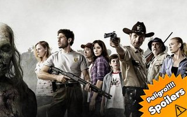
Mítico es el debate de que tal película o tal serie es un calco de tal otra a lo largo de la historia de las producciones. Con ‘The Walking Dead’ pasan bastantes cosas curiosas, una de las principales que pese a ser un producto mainstream haya calado tan bien en casi cualquier tipo de públicos dada la temática creepy y los zombies tan magníficamente caracterizados que se permite la producción.
El hecho es que el caso ‘Lost’ vs ‘Avatar’ y a su vez ‘Avatar’ vs ‘Pocahontas’ me hacen pensar que únicamente existen casi un par de historias en las que se basa casi todo, y de esta forma el mainstream consigue llegar a a los niveles que marca. Al fin y al cabo es como si volviésemos a darle vueltas a la estructura narrativa clásica de introducción-nudo-desenlace sobre la que se articula en 95% del mercado audiovisual que triunfa en el mundo. Seguro que en alguno de los episodios de ‘The Walking Dead’ has tenido un dejá vu con ‘Lost’, y es que llega un punto en el que puedes pensar en que se trata del mismo esqueleto disfrazado de una disinta piel. Infectada.
¿En qué se parecen ‘The Walking Dead’ y ‘Lost’?
Todos están igual de perdidos
En ‘Lost’ se pasaron seis temporadas perdidos. En ‘The Walking Dead’ tampoco hay rumbo. Todo se ha quedado atrás en alguna parte, y el grupo de personajes va estableciendo una vida nómada según encuentren un lugar seguro. De igual forma que los losties encontraron las estaciones de Dharma y sus personajes, el reparto de TWD localizó la granja de Hershel y ahora se dirigen de nuevo a ninguna parte.
Atlanta es la nueva Isla y las afueras son esa playa en la que se estableció el campamento inicial para comenzar la trama.
Parecidos razonables en el cuadro de personajes
Tanto en TWD como en ‘Lost’ tenemos un líder (Rick Grimes – Jack Shepard), un contralíder (Shane Walsh – Sawyer), un triángulo amoroso (Kate – Lori) y un cuadro de personajes muy similar. Podríamos establecer una relación entre ambas series con sus semejantes casi con todos ellos. Otro tema que también destaca en TWD es que tenemos un reparto de actores en el que están presentes casi todas las razas, aunque este tema es una constante en los últimos años.
Al igual que Kate, Lori y sus decisiones han sido el motivo principal de enredo entre las relaciones entre líderes y contralíderes que en TWD comienzan de forma unida.
También hay unos Otros
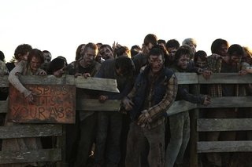
En el caso de TWD tenemos otro grupo de personajes que contrarresta al principal. Van en paralelo a la trama y no se sabe nada de ellos. El único dato que tenemos desde la segunda temporada es que todo el mundo está infectado. Desarrollan el “gen zombie” tras las muerte, bien sea por una mordedura o bien sea por muerte de cualquier otra causa. Es el único denominador común que comparten.
Siempre he pensado que Los Otros en TWD corresponden a los walkers. Sin embargo, a medida que las tramas han avanzado comienzo a pensar en la posibilidad de que existan otros grupos de personajes que vengan a hacer de Los Nuevos Otros.
El suspense como motor de la trama

Si en ‘Lost’ cualquier cosa en la que estuviese involucrada la Iniciativa Dharma nos provocaba una incontrolable sensación de suspense, curiosidad y duda a partes iguales, el reflejo en TWD podría ser la propia infección de la que no se sabe nada. El autor de la serie tampoco tiene intención de revelarlo ahora mismo (¿te recuerda a otro cierto autor conocido?).
Cada vez que se ha producido un intento de explicación o de aporte de algunas claves, veíamos como el suspense aumentaba y parecía que íbamos a entender el por qué de las cosas. Igual que en Dharma, sin embargo, nos dejan con la miel en los labios hasta nuevo aviso (recordemos el centro de refugiados). Y de ahí en adelante. Una sensación que puede llegar a ser frustrante si no se resuelve pero mientras tanto nos mantiene pegados a la pantalla.
Un entretenido chicle
‘The Walking Dead’ me entretiene, engancha. Pero no todo lo que entretiene es sinónimo de una impecable producción, y menos si hablamos de un producto mainstream. Mientras los creadores dedicen hacer o no hacer un nuevo ‘Lost’, se permiten estirar las tramas al más puro estilo isleño, mezlcando historias, triangulando personajes y matando poco a poco a los que parece que calan por su simpatía.
Al igual que ‘Lost’, ‘The Walking Dead’ acaba siendo una serie de personajes en la que cualquier circunstancia se puede dar en un entorno tan hostíl rodeado de walkers. Mientras los personajes nos sigan calando pese a ser más planos que un folio en blanco podremos estirar el chicle una importante longitud. Hasta que se rompa.
Pese a no esperar grandes resoluciones por parte de ‘The Walking Dead’, puesto que su cometido principal es entretener, si que me gustaría ver resuelto de agluna una forma que resulte verdaderamente sorprendente más allá del maquillaje el tema de la infección, antes de que sus autores se autoproclamen idiotas y digan que tampoco entienden nada de la serie, pero acaben forrados de éxito hasta los ojos.
En ¡Vaya Tele! | ‘The Walking Dead’ y su propósito de enmienda

Mon, 26 Mar 2012 21:05:33 GMT
'El número uno', todo por la música
'El número uno', todo por la música
Tres, dos, uno, cero. La expectación dejó paso a la primera gala de ‘El número uno’, un programa que esperábamos con ganas. Y eran precisamente esas ganas el primer elemento que jugaba en contra del programa. Al igual que ocurre con una película recomendada por todos tus amigos y que no le encuentras la gracia cuando vas a verla, nos habían dicho tantas veces lo espectacular que era ‘El número uno’ que ahora quedaba comprobar si el resultado hacía justicia. Tras un inicio descafeinado, en el que esperábamos algo más sorprendente (un número musical protagonizado por los cincos miembros del jurado, por ejemplo), Paula Vázquez volvía al prime time de la televisión nacional en un programa en el que se sentía cómoda desde el primer minuto. Parece que la presentadora gallega ha acertado cambiando de cadena, en un momento en el que Antena 3 necesitaba caras nuevas para cambiar de registro. ‘El número uno‘ arrancaba con un solo objetivo: devolver el protagonismo a los concursantes y olvidarse de polémicas y malos rollos que buscan el morbo en estado puro. Y lo ha conseguido. Lo primero que hay que agradecerle a ‘El número uno’ es que haya conseguido dar todo el protagonismo a los concursantes, pero no por sus historias o sus enfrentamientos (ni siquiera nos han saturado con sus presentaciones) sino por sus actuaciones. Gracias a un magnífico casting (el que nos prometieron), ‘El número uno’ consigue que el espectador vuelva a tener interés por lo que es capaz de mostrar una persona encima de un escenario, dejando a un lado cualquier tipo de valoración destructiva por parte del jurado. Es cierto que hay nivel en el programa y eso se ha agradece después de que tantos talent shows nos hayan hecho creer en el pasado que ya lo teníamos todo visto. Una parte importante de ‘El número uno’ recaía en el jurado, inexperto en esto de juzgar las actuaciones de otros, algo que se ha notado en el desarrollo de la primera gala. A los cinco componentes de ‘El número uno’ les falta asimilar el papel que les ha tocado y les sobra algo de peloteo, al igual que deben creerse eso de que en ellos recae parte fundamental del éxito que pueda alcanzar el talent show. No hace falta crear polémica, ni hundir a los participantes, pero no estaría mal que el jurado demostrara las tablas que se les supone para dar algo de espectáculo, ya sea protagonizando un número musical al inicio del programa o dando su opinión sobre las actuaciones de los concursantes. Porque ‘El número uno’ todavía necesita pulirse, sobre todo cuando las galas sean en directo, algo más que necesario en este tipo de espacios. El hecho de que el primer programa haya sido grabado le ha hecho perder algo de frescura y quizá algo de emoción. Al igual que ocurría con ‘Tu cara me suena’ o con cualquier otro talent show emitido en el pasado, siempre es una mejor opción optar por una gala en directo, algo que podremos comprobar a partir de la semana que viene. También necesita pulir su mecánica o al menos explicarla a la audiencia. Después de la primera gala no sabemos qué va a pasar con el resto de los 100 concursantes ni cómo se va a ir eligiendo a los que pasaron en la primera gala, aunque todo indica que se va a convertir en una especie de ‘Operación Triunfo’ donde cada semana haya nuevos expulsados. Lo bueno que tiene ‘El número uno’ es que el éxito que alcance dependerá de sí mismo. Por mucho que contraprograme Mediaset o por muchas jugarretas que se lleven a cabo en los programas de Telecinco, ‘El número uno’ tiene la oportunidad de quedarse con la audiencia, limando los defectos de su primera gala y demostrando que, de verdad, quieren ofrecernos un programa donde la música brille por encima de todo. La expectación ya ha terminado. La espera también. Ahora solo queda disfrutar con lo que nos tienen que ofrecer los concursantes de ‘El número uno’ que, visto lo visto en la primera gala, nos puede dejar con la boca abierta. En ¡Vata tele! | ‘El número uno’, lo que necesitas saber
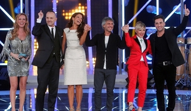
Tres, dos, uno, cero. La expectación dejó paso a la primera gala de ‘El número uno’, un programa que esperábamos con ganas. Y eran precisamente esas ganas el primer elemento que jugaba en contra del programa. Al igual que ocurre con una película recomendada por todos tus amigos y que no le encuentras la gracia cuando vas a verla, nos habían dicho tantas veces lo espectacular que era ‘El número uno’ que ahora quedaba comprobar si el resultado hacía justicia.
Tras un inicio descafeinado, en el que esperábamos algo más sorprendente (un número musical protagonizado por los cincos miembros del jurado, por ejemplo), Paula Vázquez volvía al prime time de la televisión nacional en un programa en el que se sentía cómoda desde el primer minuto. Parece que la presentadora gallega ha acertado cambiando de cadena, en un momento en el que Antena 3 necesitaba caras nuevas para cambiar de registro. ‘El número uno‘ arrancaba con un solo objetivo: devolver el protagonismo a los concursantes y olvidarse de polémicas y malos rollos que buscan el morbo en estado puro.
Y lo ha conseguido. Lo primero que hay que agradecerle a ‘El número uno’ es que haya conseguido dar todo el protagonismo a los concursantes, pero no por sus historias o sus enfrentamientos (ni siquiera nos han saturado con sus presentaciones) sino por sus actuaciones. Gracias a un magnífico casting (el que nos prometieron), ‘El número uno’ consigue que el espectador vuelva a tener interés por lo que es capaz de mostrar una persona encima de un escenario, dejando a un lado cualquier tipo de valoración destructiva por parte del jurado. Es cierto que hay nivel en el programa y eso se ha agradece después de que tantos talent shows nos hayan hecho creer en el pasado que ya lo teníamos todo visto.
Una parte importante de ‘El número uno’ recaía en el jurado, inexperto en esto de juzgar las actuaciones de otros, algo que se ha notado en el desarrollo de la primera gala. A los cinco componentes de ‘El número uno’ les falta asimilar el papel que les ha tocado y les sobra algo de peloteo, al igual que deben creerse eso de que en ellos recae parte fundamental del éxito que pueda alcanzar el talent show. No hace falta crear polémica, ni hundir a los participantes, pero no estaría mal que el jurado demostrara las tablas que se les supone para dar algo de espectáculo, ya sea protagonizando un número musical al inicio del programa o dando su opinión sobre las actuaciones de los concursantes.
Porque ‘El número uno’ todavía necesita pulirse, sobre todo cuando las galas sean en directo, algo más que necesario en este tipo de espacios. El hecho de que el primer programa haya sido grabado le ha hecho perder algo de frescura y quizá algo de emoción. Al igual que ocurría con ‘Tu cara me suena’ o con cualquier otro talent show emitido en el pasado, siempre es una mejor opción optar por una gala en directo, algo que podremos comprobar a partir de la semana que viene. También necesita pulir su mecánica o al menos explicarla a la audiencia. Después de la primera gala no sabemos qué va a pasar con el resto de los 100 concursantes ni cómo se va a ir eligiendo a los que pasaron en la primera gala, aunque todo indica que se va a convertir en una especie de ‘Operación Triunfo’ donde cada semana haya nuevos expulsados.
Lo bueno que tiene ‘El número uno’ es que el éxito que alcance dependerá de sí mismo. Por mucho que contraprograme Mediaset o por muchas jugarretas que se lleven a cabo en los programas de Telecinco, ‘El número uno’ tiene la oportunidad de quedarse con la audiencia, limando los defectos de su primera gala y demostrando que, de verdad, quieren ofrecernos un programa donde la música brille por encima de todo. La expectación ya ha terminado. La espera también. Ahora solo queda disfrutar con lo que nos tienen que ofrecer los concursantes de ‘El número uno’ que, visto lo visto en la primera gala, nos puede dejar con la boca abierta.
En ¡Vata tele! | ‘El número uno’, lo que necesitas saber
Mon, 26 Mar 2012 16:24:50 GMT
Jimmy Kimmel presentará los Emmy 2012
Jimmy Kimmel presentará los Emmy 2012
No esperábamos la noticia hasta dentro de varias semanas o meses, pero ABC ya ha iniciado la carrera por los Emmy con el anuncio del presentador de este año. Será Jimmy Kimmel, presentador del late-show ‘Jimmy Kimmel Live!’ el maestro de la ceremonia que tendrá lugar el próximo 23 de septiembre. Tomará el relevo de Jane Lynch el año pasado en FOX, conductira de una gala que, aun a pesar de no resultar siendo una ceremonia desastrosa, careció del encanto de antaño. Parece que la ABC ha aprendido del horrendo resultado que tuvo su experimento de hace cuatro años, cuando decidió que no hubiese un sólo presentador sino cinco a la vez, utilizando para ello a los nominados como Mejor presentador de un reality: Tom Bergeron, Heidi Klum, Howie Mandel, Jeff Probst y Ryan Seacrest. El resultado fue una gala deslucida, sin una guía clara, carente de interés y aburrida como ella sola. Jimmy Kimmel parece, a priori, una opción interesante de cara a los Emmy. Nunca ha presentado la ceremonia en años anteriores, pero es siempre una figura perenne en la gala a la hora de presentar algún premio, y casi siempre con un gag de humor para recordar. El año pasado, mismamente, protagonizó una divertida actuación en el escenario junto a Jimmy Fallon, presentador en 2010. Es frecuente que las cadenas tiren de sus presentadores en el late night para los Emmy (como Conan o’Brien o el propio Fallon), y Kimmel puede hacer algo grande este año. Vía | Deadline En ¡Vaya Tele! | Jane Lynch presentará los Emmy 2011
No esperábamos la noticia hasta dentro de varias semanas o meses, pero ABC ya ha iniciado la carrera por los Emmy con el anuncio del presentador de este año. Será Jimmy Kimmel, presentador del late-show ‘Jimmy Kimmel Live!’ el maestro de la ceremonia que tendrá lugar el próximo 23 de septiembre. Tomará el relevo de Jane Lynch el año pasado en FOX, conductira de una gala que, aun a pesar de no resultar siendo una ceremonia desastrosa, careció del encanto de antaño.
Parece que la ABC ha aprendido del horrendo resultado que tuvo su experimento de hace cuatro años, cuando decidió que no hubiese un sólo presentador sino cinco a la vez, utilizando para ello a los nominados como Mejor presentador de un reality: Tom Bergeron, Heidi Klum, Howie Mandel, Jeff Probst y Ryan Seacrest. El resultado fue una gala deslucida, sin una guía clara, carente de interés y aburrida como ella sola.
Jimmy Kimmel parece, a priori, una opción interesante de cara a los Emmy. Nunca ha presentado la ceremonia en años anteriores, pero es siempre una figura perenne en la gala a la hora de presentar algún premio, y casi siempre con un gag de humor para recordar. El año pasado, mismamente, protagonizó una divertida actuación en el escenario junto a Jimmy Fallon, presentador en 2010. Es frecuente que las cadenas tiren de sus presentadores en el late night para los Emmy (como Conan o’Brien o el propio Fallon), y Kimmel puede hacer algo grande este año.
Vía | Deadline
En ¡Vaya Tele! | Jane Lynch presentará los Emmy 2011
Mon, 26 Mar 2012 15:09:47 GMT
Telecinco prepara la serie 'El Príncipe', narcotráfico en Ceuta
Telecinco prepara la serie 'El Príncipe', narcotráfico en Ceuta
El panorama de la ficción nacional en Telecinco es desastroso. Ninguna de sus últimas propuestas ha funcionado (ni ‘Cheers’, ni ‘Homicidios’, ni ‘La Fuga‘…) y tampoco le quedan demasiadas series consolidadas en su cartera. Sólo ‘Aída’ y ‘La que se avecina’ demuestran salud de hierro, mientras ‘Hospital Central’ sigue denostada por la cadena de Fuencarral y ‘Tierra de Lobos’ nunca ha sido una serie de primer nivel. Es por esto por lo que Telecinco no debe dormirse en los laureles y esforzarse por encontrar la serie que la saque del pozo. Está claro que las series más adultas y de género como ‘Homicidios’ o ‘Punta Escarlata’ no son lo que su público desea ver, por lo que deberían intentarlo por otro camino. Tal vez con ese razonamiento, en Mediaset han echado la mirada al pasado y han encontrado en ‘Sin tetas no hay paraíso‘ su último gran éxito. Así se explica que ahora den luz verde a un proyecto como ‘El Príncipe’, que no oculta sus parecidos razonables con la serie que protagonizó Miguel Ángel Silvestre en la misma cadena. Esta nueva ficción volverá a tratar el mundo del narcotráfico como excusa para narrar una gran historia de amor. La diferencia será que en este caso la acción se traslada a la barriada ceutí de El Príncipe Alonso, donde además afecta el choque cultural entre la población marroquí y la local. Vía | FormulaTV En ¡Vaya Tele! | Telecinco cancela ‘La Fuga’

El panorama de la ficción nacional en Telecinco es desastroso. Ninguna de sus últimas propuestas ha funcionado (ni ‘Cheers’, ni ‘Homicidios’, ni ‘La Fuga‘…) y tampoco le quedan demasiadas series consolidadas en su cartera. Sólo ‘Aída’ y ‘La que se avecina’ demuestran salud de hierro, mientras ‘Hospital Central’ sigue denostada por la cadena de Fuencarral y ‘Tierra de Lobos’ nunca ha sido una serie de primer nivel.
Es por esto por lo que Telecinco no debe dormirse en los laureles y esforzarse por encontrar la serie que la saque del pozo. Está claro que las series más adultas y de género como ‘Homicidios’ o ‘Punta Escarlata’ no son lo que su público desea ver, por lo que deberían intentarlo por otro camino. Tal vez con ese razonamiento, en Mediaset han echado la mirada al pasado y han encontrado en ‘Sin tetas no hay paraíso‘ su último gran éxito.
Así se explica que ahora den luz verde a un proyecto como ‘El Príncipe’, que no oculta sus parecidos razonables con la serie que protagonizó Miguel Ángel Silvestre en la misma cadena. Esta nueva ficción volverá a tratar el mundo del narcotráfico como excusa para narrar una gran historia de amor. La diferencia será que en este caso la acción se traslada a la barriada ceutí de El Príncipe Alonso, donde además afecta el choque cultural entre la población marroquí y la local.
Vía | FormulaTV
En ¡Vaya Tele! | Telecinco cancela ‘La Fuga’
Mon, 26 Mar 2012 09:51:41 GMT
'Doctor Who', primer tráiler de la séptima temporada
'Doctor Who', primer tráiler de la séptima temporada
Durante el pasado fin de semana se ha estado celebrando en Cardiff, Gales, la convención que se celebra centrada en ‘Doctor Who’ una de las series favoritas para el que escribe y para muchos de los seriéfilos de pro. Durante esa conveción se proyectó el vídeo que tenéis encabezando esta entrada y que hoy ha publicado, por fin, BBC. Así pues ya tenemos aquí el tráiler de la séptima temporada (o series seven, según cómo prefiráis decirlo) de ‘Doctor Who’. Aún sin fecha de estreno (probablemente en otoño) el tráiler, como podéis ver, consiste mayoritariamente en imágenes del episodio de ‘Doctor Who‘ rodado en los míticos escenarios del espaghetti western almeriense. Pero además tenemos algún que otro vistazo a los villanos de esta temporada e incluso lo que parece ser un ojo robótico sospechoso enterrando en la nieve. Esta séptima temporada es una de esas en las que todo el mundo tiene el ojo puesto. Hay muchas expectativas por ver lo qué pasará con el Doctor, Amy y Rory y cómo se incorporará la nueva companion, interpretada por Jenna-Louise Coleman. No sólo eso, sino que esta temporada servirá de preludio para la celebración del cincuenta aniversario de la serie. Y la verdad es que yo ya tengo muchas ganas de ver el regreso de ‘Doctor Who’, a ver con qué emocionantes aventuras nos sorprende Moffat y compañía. Vía | BBC En ¡Vaya Tele! | Análisis de la sexta temporada de ‘Doctor Who’
Durante el pasado fin de semana se ha estado celebrando en Cardiff, Gales, la convención que se celebra centrada en ‘Doctor Who’ una de las series favoritas para el que escribe y para muchos de los seriéfilos de pro. Durante esa conveción se proyectó el vídeo que tenéis encabezando esta entrada y que hoy ha publicado, por fin, BBC. Así pues ya tenemos aquí el tráiler de la séptima temporada (o series seven, según cómo prefiráis decirlo) de ‘Doctor Who’.
Aún sin fecha de estreno (probablemente en otoño) el tráiler, como podéis ver, consiste mayoritariamente en imágenes del episodio de ‘Doctor Who‘ rodado en los míticos escenarios del espaghetti western almeriense. Pero además tenemos algún que otro vistazo a los villanos de esta temporada e incluso lo que parece ser un ojo robótico sospechoso enterrando en la nieve.
Esta séptima temporada es una de esas en las que todo el mundo tiene el ojo puesto. Hay muchas expectativas por ver lo qué pasará con el Doctor, Amy y Rory y cómo se incorporará la nueva companion, interpretada por Jenna-Louise Coleman. No sólo eso, sino que esta temporada servirá de preludio para la celebración del cincuenta aniversario de la serie. Y la verdad es que yo ya tengo muchas ganas de ver el regreso de ‘Doctor Who’, a ver con qué emocionantes aventuras nos sorprende Moffat y compañía.
Vía | BBC
En ¡Vaya Tele! | Análisis de la sexta temporada de ‘Doctor Who’
Mon, 26 Mar 2012 05:00:00 GMT
Sugerencias Semanales | Del 26 de marzo al 1 de abril
Sugerencias Semanales | Del 26 de marzo al 1 de abril
Arrancamos una nueva semana en el panorama televisivo, marcada por algunos estrenos que llevábamos tiempo esperando y por la huelga general prevista para el próximo jueves, que puede alterar la parrilla programada para ese día. Uno de los días más competitivos de esta semana será precisamente hoy, ya que el prime time estará marcado por el estreno de ‘El número uno‘, el talent show presentado por Paula Vázquez que busca convertirse en el gran éxito de esta temporada. Ante ese estreno, Mediaset ha sacado su artillería pesada, modificando la programación de sus principales canales. Por ello, esta noche Telecinco se adelantará al jueves y emitirá una nueva gala de ‘Gran Hermano’, mientras que Cuatro mostrará a la audiencia el esperado final de temporada de ‘Quién quiere casarse con mi hijo’, retrasado a conciencia para competir con el programa de Antena 3. El martes la audiencia estará pendiente de la llegada de ‘American Horror Story‘ a la televisión española en abierto, que se emitirá a partir de las 23:15 horas después del final de temporada de ‘Terra Nova’. Al contrario de lo que ocurre el lunes por la noche, el resto de programación no se verá afectada, ya que ‘Toledo’ continuará con sus últimos episodios en Antena 3, ‘Tú sí que vales’ emitirá una nueva gala de los mejores talentos que han pasado por el formato (una vez más), mientras que laSexta dedica otro de sus martes a El Taquillazo, esta vez decantándose por ‘Seven’. Mientras, a La 1 le toca emitir el encuentro entre Apoel-Real Madrid, partido de ida de los cuartos de final de la Champions. Nueva noche de series la que nos espera el miércoles en la parrilla española. Por un lado, ‘Con el culo al aire’ intentará consolidar una semana más a su audiencia, que se muestra convencida por la comedia que ha ofrecido Antena 3 esta temporada. Mientras, ‘La fuga’ continúa con los últimos capítulos de la temporada, aunque una semana más no podemos asegurar con exactitud a qué hora comenzará su nuevo episodio (puede hacerlo en un intervalo que va desde las 22:00 horas hasta la medianoche). Y, para quien no haya tenido suficientes series, algunos estarán muy pendientes a la noche del jueves. Ese día laSexta tiene previsto emitir un doble capítulo de ‘The Walking Dead’, que pondrá fin a la segunda temporada de la ficción y que terminará dejando a la mayoría de sus seguidores con ganas de más. Por su parte, la tercera temporada de ‘Los protegidos’ sigue su camino en Antena 3, mostrando a sus fans el origen de los poderes de los protagonistas. Hay que recordar que el jueves es el día en el que está convocada la huelga general en España, por lo que muchos informativos o programas en directo podrían verse alterados considerablemente. El viernes asistiremos al nacimiento de un nuevo canal. Paramount Channel inicia sus emisiones sustituyendo a La 10 y lo hará ofreciendo 24 horas de cine, compitiendo directamente con la ofera que ofrece con éxito LaSexta 3 desde hace varios meses. Muy atentos deben estar todos los amantes de la ficción extranjera de cara al fin de semana, ya que el próximo domingo es 1 de abril, un día marcado en el calendario de muchos por una razón más que evidente: el estreno de la segunda temporada de ‘Juego de Tronos’. La ficción que fascinó la temporada pasada vuelve a HBO para seguir cautivando a crítica y público. También habrá que estar muy pendientes de series como ‘Spartacus’ o ‘Alcatraz’, que despiden temporada esta semana. En ¡Vaya tele! | Sugerencias Semanales
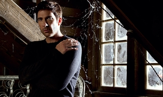
Arrancamos una nueva semana en el panorama televisivo, marcada por algunos estrenos que llevábamos tiempo esperando y por la huelga general prevista para el próximo jueves, que puede alterar la parrilla programada para ese día. Uno de los días más competitivos de esta semana será precisamente hoy, ya que el prime time estará marcado por el estreno de ‘El número uno‘, el talent show presentado por Paula Vázquez que busca convertirse en el gran éxito de esta temporada.
Ante ese estreno, Mediaset ha sacado su artillería pesada, modificando la programación de sus principales canales. Por ello, esta noche Telecinco se adelantará al jueves y emitirá una nueva gala de ‘Gran Hermano’, mientras que Cuatro mostrará a la audiencia el esperado final de temporada de ‘Quién quiere casarse con mi hijo’, retrasado a conciencia para competir con el programa de Antena 3.
El martes la audiencia estará pendiente de la llegada de ‘American Horror Story‘ a la televisión española en abierto, que se emitirá a partir de las 23:15 horas después del final de temporada de ‘Terra Nova’. Al contrario de lo que ocurre el lunes por la noche, el resto de programación no se verá afectada, ya que ‘Toledo’ continuará con sus últimos episodios en Antena 3, ‘Tú sí que vales’ emitirá una nueva gala de los mejores talentos que han pasado por el formato (una vez más), mientras que laSexta dedica otro de sus martes a El Taquillazo, esta vez decantándose por ‘Seven’. Mientras, a La 1 le toca emitir el encuentro entre Apoel-Real Madrid, partido de ida de los cuartos de final de la Champions.
Nueva noche de series la que nos espera el miércoles en la parrilla española. Por un lado, ‘Con el culo al aire’ intentará consolidar una semana más a su audiencia, que se muestra convencida por la comedia que ha ofrecido Antena 3 esta temporada. Mientras, ‘La fuga’ continúa con los últimos capítulos de la temporada, aunque una semana más no podemos asegurar con exactitud a qué hora comenzará su nuevo episodio (puede hacerlo en un intervalo que va desde las 22:00 horas hasta la medianoche).
Y, para quien no haya tenido suficientes series, algunos estarán muy pendientes a la noche del jueves. Ese día laSexta tiene previsto emitir un doble capítulo de ‘The Walking Dead’, que pondrá fin a la segunda temporada de la ficción y que terminará dejando a la mayoría de sus seguidores con ganas de más. Por su parte, la tercera temporada de ‘Los protegidos’ sigue su camino en Antena 3, mostrando a sus fans el origen de los poderes de los protagonistas. Hay que recordar que el jueves es el día en el que está convocada la huelga general en España, por lo que muchos informativos o programas en directo podrían verse alterados considerablemente.
El viernes asistiremos al nacimiento de un nuevo canal. Paramount Channel inicia sus emisiones sustituyendo a La 10 y lo hará ofreciendo 24 horas de cine, compitiendo directamente con la ofera que ofrece con éxito LaSexta 3 desde hace varios meses.
Muy atentos deben estar todos los amantes de la ficción extranjera de cara al fin de semana, ya que el próximo domingo es 1 de abril, un día marcado en el calendario de muchos por una razón más que evidente: el estreno de la segunda temporada de ‘Juego de Tronos’. La ficción que fascinó la temporada pasada vuelve a HBO para seguir cautivando a crítica y público. También habrá que estar muy pendientes de series como ‘Spartacus’ o ‘Alcatraz’, que despiden temporada esta semana.
En ¡Vaya tele! | Sugerencias Semanales
Sun, 25 Mar 2012 19:04:00 GMT
Edición USA: 'Pretty Little Liars' arrasa, 'Touch' se estrena bien, la NBC fracasa con 'Bent' y más
Edición USA: 'Pretty Little Liars' arrasa, 'Touch' se estrena bien, la NBC fracasa con 'Bent' y más
Una semana más se acaba y con ella llegamos al momento en el que hay que analizar cómo han ido los últimos siete días televisivamente hablando en la televisión americana. Eso es lo que hacemos en Edición USA, repasamos las audiencias de las principales series de las cadenas americanas y revisamos cualquier cambio de parrilla que haya en ellas. Esta semana se ha caracterizado por unos cuantos récords de audiencia, dos estrenos que eran bastante esperados y el enésimo fracaso de la NBC en forma de serie de estreno. Ciertamente, el comienzo de esta semana parecía bastante tranquilo y creíamos que iba a pasar sin pena ni gloria. Qué equivocados estábamos. La season finale de ‘Pretty Little Liars’ bate récords de audiencia ‘Pretty Little Liars‘ ha sido una serie que, pese a no tener una gran audiencia total, siempre ha tenido un gran éxito entre su público objetivo, las mujeres de 18 a 34 años. Esta semana fue el final de su segunda temporada en donde se revelaba uno de los secretos que siempre estuvo alrededor de la serie, la identidad de un personaje llamado A que se metía en la vida de las protagonistas escondiéndose en la anonimidad. Esta promesa de revelación (que se cumplió, por cierto) hizo que la serie batiera récords absolutos de audiencia, siendo la serie más vista de todos los tiempos entre mujeres de 18 a 34 años y consiguiendo datos de audiencia de dos dígitos en los diferentes públicos objetivo, incluídos los hombres. Para que luego digan que las cadenas como ABC Family no son más que secundarias. ‘The Walking Dead’ consigue récord para AMC con su finale Si las pequeñas mentirosas consiguieron grandes récords esta semana, los zombies no se quisieron quedar atrás. Como seguro que sabéis, ‘The Walking Dead‘ terminó su segunda temporada esta semana, lo que hizo que se reunieran más de nueve millones de espectadores ante la televisión, de los cuales un 4.7% pertenecían a la demo (edades en 18 y 49 años). Estos datos catapultaron al episodio al número uno de la lista de episodios más vistos de la temporada 2011/2012. Con este increíble dato de audiencia (recordemos que cadenas como la NBC no llegan ni al 2.0 en la demo en la mayoría de ocasiones), la serie se ha convertido en la ficción más vista en el cable básico americano entre los telespectadores de 18 a 49 años, algo que seguro que tuvo a los directivos de la AMC felices durante todo el día, ya que estos datos para una cadena como esa no son para nada habituales. La NBC vuelve a fracasar con el estreno de ‘Bent’ Parece que la NBC no logra acertar con ninguno de sus estrenos. En esta ocasión la protagonista ha sido ‘Bent‘, una comedia muy ligera que se estrenó el pasado miércoles y que ha fracasado estrepitosamente en audiencia. Y digo estrepitosamente por no poner otro adjetivo mayor, ya que la serie sólo fue capaz de llegar a 2.8 millones de espectadores y un 1.0 en la demo, algo que para la NBC es más que inaceptable. ¿Estaremos ante una cancelación inmediata? Si el estreno hubiera sido hace unos años, no tendríamos dudas, pero viendo el paupérrimo estado en el que está NBC en algunos frentes, es bastante probable que le intente dar algo de confianza a la serie para ver si remonta y consigue datos de audiencia que se puedan considerar aceptables. ‘Touch’ se vuelve a estrenar con un notable El pasado miércoles la FOX decidió volver a estrenar ‘Touch‘ con la estrategia de mostrar de nuevo el piloto y, a continuación, el segundo episodio. La jugada no le salió nada mal ya que la nueva serie de Kiefer Sutherland consiguió ni más ni menos que un 3.3 en la demo, anotando así un punto para la FOX, ya que con la emisión de ‘American Idol‘ la cadena se hizo con la siempre deseada noche del jueves. Si comparamos este segundo estreno con el primero la audiencia cayó un 15%, pero aún así los datos siguen siendo excelentes, ya que conseguir heredar a la mayor parte de los espectadores de su lead-in (‘American Idol’) es un hecho remarcable y que tiene que tener a los productores de la serie realmente contentos. Habrá que ver cómo se estabilizan las audiencias la semana que viene, pero parece que estamos ante un nuevo éxito de FOX. En ¡Vaya Tele! | Edición USA
Una semana más se acaba y con ella llegamos al momento en el que hay que analizar cómo han ido los últimos siete días televisivamente hablando en la televisión americana. Eso es lo que hacemos en Edición USA, repasamos las audiencias de las principales series de las cadenas americanas y revisamos cualquier cambio de parrilla que haya en ellas.
Esta semana se ha caracterizado por unos cuantos récords de audiencia, dos estrenos que eran bastante esperados y el enésimo fracaso de la NBC en forma de serie de estreno. Ciertamente, el comienzo de esta semana parecía bastante tranquilo y creíamos que iba a pasar sin pena ni gloria. Qué equivocados estábamos.
La season finale de ‘Pretty Little Liars’ bate récords de audiencia
‘Pretty Little Liars‘ ha sido una serie que, pese a no tener una gran audiencia total, siempre ha tenido un gran éxito entre su público objetivo, las mujeres de 18 a 34 años. Esta semana fue el final de su segunda temporada en donde se revelaba uno de los secretos que siempre estuvo alrededor de la serie, la identidad de un personaje llamado A que se metía en la vida de las protagonistas escondiéndose en la anonimidad.
Esta promesa de revelación (que se cumplió, por cierto) hizo que la serie batiera récords absolutos de audiencia, siendo la serie más vista de todos los tiempos entre mujeres de 18 a 34 años y consiguiendo datos de audiencia de dos dígitos en los diferentes públicos objetivo, incluídos los hombres. Para que luego digan que las cadenas como ABC Family no son más que secundarias.
‘The Walking Dead’ consigue récord para AMC con su finale
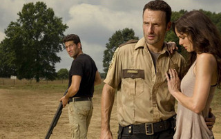
Si las pequeñas mentirosas consiguieron grandes récords esta semana, los zombies no se quisieron quedar atrás. Como seguro que sabéis, ‘The Walking Dead‘ terminó su segunda temporada esta semana, lo que hizo que se reunieran más de nueve millones de espectadores ante la televisión, de los cuales un 4.7% pertenecían a la demo (edades en 18 y 49 años). Estos datos catapultaron al episodio al número uno de la lista de episodios más vistos de la temporada 2011/2012.
Con este increíble dato de audiencia (recordemos que cadenas como la NBC no llegan ni al 2.0 en la demo en la mayoría de ocasiones), la serie se ha convertido en la ficción más vista en el cable básico americano entre los telespectadores de 18 a 49 años, algo que seguro que tuvo a los directivos de la AMC felices durante todo el día, ya que estos datos para una cadena como esa no son para nada habituales.
La NBC vuelve a fracasar con el estreno de ‘Bent’
Parece que la NBC no logra acertar con ninguno de sus estrenos. En esta ocasión la protagonista ha sido ‘Bent‘, una comedia muy ligera que se estrenó el pasado miércoles y que ha fracasado estrepitosamente en audiencia. Y digo estrepitosamente por no poner otro adjetivo mayor, ya que la serie sólo fue capaz de llegar a 2.8 millones de espectadores y un 1.0 en la demo, algo que para la NBC es más que inaceptable.

¿Estaremos ante una cancelación inmediata? Si el estreno hubiera sido hace unos años, no tendríamos dudas, pero viendo el paupérrimo estado en el que está NBC en algunos frentes, es bastante probable que le intente dar algo de confianza a la serie para ver si remonta y consigue datos de audiencia que se puedan considerar aceptables.
‘Touch’ se vuelve a estrenar con un notable
El pasado miércoles la FOX decidió volver a estrenar ‘Touch‘ con la estrategia de mostrar de nuevo el piloto y, a continuación, el segundo episodio. La jugada no le salió nada mal ya que la nueva serie de Kiefer Sutherland consiguió ni más ni menos que un 3.3 en la demo, anotando así un punto para la FOX, ya que con la emisión de ‘American Idol‘ la cadena se hizo con la siempre deseada noche del jueves.
Si comparamos este segundo estreno con el primero la audiencia cayó un 15%, pero aún así los datos siguen siendo excelentes, ya que conseguir heredar a la mayor parte de los espectadores de su lead-in (‘American Idol’) es un hecho remarcable y que tiene que tener a los productores de la serie realmente contentos. Habrá que ver cómo se estabilizan las audiencias la semana que viene, pero parece que estamos ante un nuevo éxito de FOX.
En ¡Vaya Tele! | Edición USA
Sun, 25 Mar 2012 12:55:03 GMT
'Cosmos', Nostalgia TV
'Cosmos', Nostalgia TV
El Cosmos es todo lo que es o lo que fue o lo que será alguna vez. Uno de los divulgadores científicos más importantes de los últimos 30 años es Carl Sagan, astrónomo estadounidense conocido, entre otras cosas, por su participación a finales de los 70 en el programa de las sondas Voyager (dos naves que están ya prácticamente fuera de los confines del Sistema Solar), sus estudios sobre la atmósfera de Venus y su impulso del proyecto SETI de búsqueda de inteligencias extraterrestres, además de por tener una mirada escéptica hacia las pseudociencias. Sagan, que también hizo sus incursiones en la ciencia ficción con ‘Contact‘, está considerado uno de los mayores popularizadores de la astronomía, la cosmología y la ciencia en general, siendo capaz de acercar al gran público lo que se conocía a principios de los 80 sobre el origen del Universo, el Sistema Solar, la posibilidad de viajar a otras estrellas (y en el tiempo) y las probabilidades de que la Tierra fuera el único planeta habitado de la galaxia. Todo eso, Sagan lo contó, con la asistencia de su mujer, Ann Druyan, y del astrofísico Steven Soter, en ‘Cosmos: Un viaje personal‘, una serie documental de 13 capítulos que cambió por completo el modo en el que se presentaba la divulgación científica en televisión y, en su momento, generó alguna que otra controversia por su modo de contar la teoría de la evolución de Darwin (que ya sabemos que no es del agrado de los creacionistas) y por su aseveración de que la Tierra no es más que un planeta diminuto que gira alrededor de una estrella insignificante que se mueve por el exterior de una galaxia como hay milllones en todo el Universo. Y también popularizó la expresión de que todos nosotros estamos hechos del mismo material del que están hechas las estrellas. Un hito de la divulgación ‘Cosmos’, emitida por PBS en 1980 y luego estrenada en más de 60 países, estableció un nuevo modo de contar la ciencia al gran público. Utilizando recreaciones con efectos especiales (como las usadas para mostrar la quema de la biblioteca de Alejandría y el asesinato de Hipatia), una banda sonora de Vangelis y comparaciones fáciles de entender, como aquella famosa de que al hombre le quedaba tanto por comprender del Universo que, si éste fuera un océano, sólo nos habríamos acercado a la orilla, la serie fue un impresionante y sorprendente éxito de audiencia, el mayor de PBS hasta que, ya en los 90, emitió una serie documental sobre la Guerra de Secesión de Ken Burns. En cada uno de los 13 capítulos, Sagan introducía el tema, por ejemplo, comparando las observaciones del Sistema Solar del siglo XVII, las primeras con telescopios, con la era de las exploraciones marinas de África y América, y si tenía que hablar de Marte, se iba al Valle de la Muerte en California, un lugar que la NASA considera análogo al planeta rojo, con una maqueta a escala más o menos real de un aterrizador Viking (el primero que envió a la Tierra imágenes desde la superficie marciana). El objetivo de la serie era conseguir que entendiéramos y nos interesáramos, por ejemplo, por los momentos inmediatamente posteriores al Big Bang o por la importancia que tienen las supernovas en la formación de nuevos objetos en el Cosmos, ya que el estallido de esas estrellas lanza al espacio elementos que, más tarde, son cruciales en la formación de nuevas estrellas y planetas, y también de formas de vida como nosotros. La secuela de Fox Como decimos, ‘Cosmos’ fue un gran éxito, impulsado también porque en 1980 hubo una huelga de actores que trastocó buena parte de la programación televisiva. Toda una generación de jóvenes empezó a interesarse por la astronomía y la ciencia y se calcula que, entre reemisiones y estrenos en su momento, más de 600 millones de espectadores vieron la serie en todo el mundo. Sagan publicó un libro que resumía lo que se contaba en el programa de televisión y, ya en los 90, la serie se editó en DVD con un anexo en el que se actualizaban algunas de las teorías que se contaban en ella. Aún se guarda un buen recuerdo de ‘Cosmos’, razón por la que, tal vez, Fox anunció el pasado mes de agosto que iba a emitir una continuación el año que viene. La nueva serie contará de nuevo con Ann Druyan y Steven Soter en los guiones, y su presentador será Neil deGrasse Tyson, astrónomo y director del planetario Hayden de Nueva York. Lo más curioso de todo es que el encargado de poner este ‘Cosmos, una odisea del espacio-tiempo‘ será Seth McFarlane, creador de ‘Padre de familia‘ y responsable también para el canal de una nueva versión de ‘Los Picapiedra‘. No se sabe todavía de qué temas tratará esta nueva ‘Cosmos’, pero deGrasse Tyson también es un reconocido divulgador (es asiduo de ‘The Colbert Report‘, por ejemplo), por lo que no parece que vayan a despegarse mucho del estilo seguido por Carl Sagan. ‘Cosmos’ es, como hemos comentado, un hito en la divulgación científica por televisión, una manera entretenida de hacer que un público no familiarizado con la astronomía comprendiera por qué el Universo está lleno de maravillas, de incógnitas y resulta tan interesante de estudiar. Hay curiosidad por ver cómo continuarán su legado MacFarlane y deGrasse Tyson, sobre todo porque, a priori, no es un proyecto que encaje mucho con Fox. Ficha Técnica: Cosmos
Título Original: Cosmos: A personal voyage
Género: Documental
Cadena: PBS (1980)
Emitida en España: TVE
Disponibilidad DVD: Serie completa En ¡Vaya Tele! | Nostalgia TV
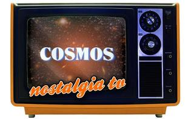
El Cosmos es todo lo que es o lo que fue o lo que será alguna vez.
Uno de los divulgadores científicos más importantes de los últimos 30 años es Carl Sagan, astrónomo estadounidense conocido, entre otras cosas, por su participación a finales de los 70 en el programa de las sondas Voyager (dos naves que están ya prácticamente fuera de los confines del Sistema Solar), sus estudios sobre la atmósfera de Venus y su impulso del proyecto SETI de búsqueda de inteligencias extraterrestres, además de por tener una mirada escéptica hacia las pseudociencias. Sagan, que también hizo sus incursiones en la ciencia ficción con ‘Contact‘, está considerado uno de los mayores popularizadores de la astronomía, la cosmología y la ciencia en general, siendo capaz de acercar al gran público lo que se conocía a principios de los 80 sobre el origen del Universo, el Sistema Solar, la posibilidad de viajar a otras estrellas (y en el tiempo) y las probabilidades de que la Tierra fuera el único planeta habitado de la galaxia.
Todo eso, Sagan lo contó, con la asistencia de su mujer, Ann Druyan, y del astrofísico Steven Soter, en ‘Cosmos: Un viaje personal‘, una serie documental de 13 capítulos que cambió por completo el modo en el que se presentaba la divulgación científica en televisión y, en su momento, generó alguna que otra controversia por su modo de contar la teoría de la evolución de Darwin (que ya sabemos que no es del agrado de los creacionistas) y por su aseveración de que la Tierra no es más que un planeta diminuto que gira alrededor de una estrella insignificante que se mueve por el exterior de una galaxia como hay milllones en todo el Universo. Y también popularizó la expresión de que todos nosotros estamos hechos del mismo material del que están hechas las estrellas.
Un hito de la divulgación
‘Cosmos’, emitida por PBS en 1980 y luego estrenada en más de 60 países, estableció un nuevo modo de contar la ciencia al gran público. Utilizando recreaciones con efectos especiales (como las usadas para mostrar la quema de la biblioteca de Alejandría y el asesinato de Hipatia), una banda sonora de Vangelis y comparaciones fáciles de entender, como aquella famosa de que al hombre le quedaba tanto por comprender del Universo que, si éste fuera un océano, sólo nos habríamos acercado a la orilla, la serie fue un impresionante y sorprendente éxito de audiencia, el mayor de PBS hasta que, ya en los 90, emitió una serie documental sobre la Guerra de Secesión de Ken Burns.
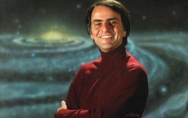
En cada uno de los 13 capítulos, Sagan introducía el tema, por ejemplo, comparando las observaciones del Sistema Solar del siglo XVII, las primeras con telescopios, con la era de las exploraciones marinas de África y América, y si tenía que hablar de Marte, se iba al Valle de la Muerte en California, un lugar que la NASA considera análogo al planeta rojo, con una maqueta a escala más o menos real de un aterrizador Viking (el primero que envió a la Tierra imágenes desde la superficie marciana). El objetivo de la serie era conseguir que entendiéramos y nos interesáramos, por ejemplo, por los momentos inmediatamente posteriores al Big Bang o por la importancia que tienen las supernovas en la formación de nuevos objetos en el Cosmos, ya que el estallido de esas estrellas lanza al espacio elementos que, más tarde, son cruciales en la formación de nuevas estrellas y planetas, y también de formas de vida como nosotros.
La secuela de Fox
Como decimos, ‘Cosmos’ fue un gran éxito, impulsado también porque en 1980 hubo una huelga de actores que trastocó buena parte de la programación televisiva. Toda una generación de jóvenes empezó a interesarse por la astronomía y la ciencia y se calcula que, entre reemisiones y estrenos en su momento, más de 600 millones de espectadores vieron la serie en todo el mundo. Sagan publicó un libro que resumía lo que se contaba en el programa de televisión y, ya en los 90, la serie se editó en DVD con un anexo en el que se actualizaban algunas de las teorías que se contaban en ella. Aún se guarda un buen recuerdo de ‘Cosmos’, razón por la que, tal vez, Fox anunció el pasado mes de agosto que iba a emitir una continuación el año que viene.
La nueva serie contará de nuevo con Ann Druyan y Steven Soter en los guiones, y su presentador será Neil deGrasse Tyson, astrónomo y director del planetario Hayden de Nueva York. Lo más curioso de todo es que el encargado de poner este ‘Cosmos, una odisea del espacio-tiempo‘ será Seth McFarlane, creador de ‘Padre de familia‘ y responsable también para el canal de una nueva versión de ‘Los Picapiedra‘. No se sabe todavía de qué temas tratará esta nueva ‘Cosmos’, pero deGrasse Tyson también es un reconocido divulgador (es asiduo de ‘The Colbert Report‘, por ejemplo), por lo que no parece que vayan a despegarse mucho del estilo seguido por Carl Sagan.
‘Cosmos’ es, como hemos comentado, un hito en la divulgación científica por televisión, una manera entretenida de hacer que un público no familiarizado con la astronomía comprendiera por qué el Universo está lleno de maravillas, de incógnitas y resulta tan interesante de estudiar. Hay curiosidad por ver cómo continuarán su legado MacFarlane y deGrasse Tyson, sobre todo porque, a priori, no es un proyecto que encaje mucho con Fox.
Ficha Técnica: Cosmos

-
Título Original: Cosmos: A personal voyage
-
Género: Documental
-
Cadena: PBS (1980)
-
Emitida en España: TVE
-
Disponibilidad DVD: Serie completa
En ¡Vaya Tele! | Nostalgia TV
Sat, 24 Mar 2012 16:16:24 GMT
laSexta comienza a promocionar su 'Pesadilla en la Cocina'
laSexta comienza a promocionar su 'Pesadilla en la Cocina'
Cuando un programa extranjero es importado a nuestro país y obtiene buenas audiencias, no pasa desapercibido por las cadenas, las cuales se suelen apresurar en hacerse con los derechos de emisión y hacerlo suyo adaptándolo con una versión patria más o menos acertada. El éxito de ‘Kitchen Nightmares‘ (el programa original) en Nova sorprendió a muchos y por eso hace ya unos meses supimos que Antena 3 iba a adaptar el programa para España. Azares del destino (nótese la ironía), al final no va a ser Antena 3 quien adapte el programa de Gordon Ramsay, si no que será laSexta la que adapte el programa. Y han elegido ni más ni menos que a Alberto Chicote para ser su Gordon Ramsay, un chef bastante conocido y galardonado y que tiene un punto a favor para el programa: su aspecto intimidante. La cadena ya ha comenzado a promocionar el programa con el vídeo que podéis ver al comienzo de todo. Cabe destacar, aparte de las camisas horteras de Chicote, que parece que el programa va a seguir la misma línea que el programa original, es decir, visitando restaurantes y criticándolos al máximo para ayudar a mejorar su negocio. Habrá que ver si Chicote se atreve a ser tan extremadamente agresivo como lo era Ramsay. En la promo parece que sí, pero habrá que esperar al estreno del programa para comprobarlo definitivamente, algo (el estreno) que esperamos que a lo largo del mes que viene. En ¡Vaya Tele! | Antena 3 prepara su propia versión de ‘Pesadilla en la Cocina’
Cuando un programa extranjero es importado a nuestro país y obtiene buenas audiencias, no pasa desapercibido por las cadenas, las cuales se suelen apresurar en hacerse con los derechos de emisión y hacerlo suyo adaptándolo con una versión patria más o menos acertada. El éxito de ‘Kitchen Nightmares‘ (el programa original) en Nova sorprendió a muchos y por eso hace ya unos meses supimos que Antena 3 iba a adaptar el programa para España.
Azares del destino (nótese la ironía), al final no va a ser Antena 3 quien adapte el programa de Gordon Ramsay, si no que será laSexta la que adapte el programa. Y han elegido ni más ni menos que a Alberto Chicote para ser su Gordon Ramsay, un chef bastante conocido y galardonado y que tiene un punto a favor para el programa: su aspecto intimidante.
La cadena ya ha comenzado a promocionar el programa con el vídeo que podéis ver al comienzo de todo. Cabe destacar, aparte de las camisas horteras de Chicote, que parece que el programa va a seguir la misma línea que el programa original, es decir, visitando restaurantes y criticándolos al máximo para ayudar a mejorar su negocio. Habrá que ver si Chicote se atreve a ser tan extremadamente agresivo como lo era Ramsay. En la promo parece que sí, pero habrá que esperar al estreno del programa para comprobarlo definitivamente, algo (el estreno) que esperamos que a lo largo del mes que viene.
En ¡Vaya Tele! | Antena 3 prepara su propia versión de ‘Pesadilla en la Cocina’
Sat, 24 Mar 2012 10:01:49 GMT
'American Horror Story' llega el martes 27 de marzo a Cuatro
'American Horror Story' llega el martes 27 de marzo a Cuatro
Se veía venir que ‘American Horror Story‘ vendría a ocupar el sitio de ‘Terra Nova’ en Cuatro, y finalmente así se ha confirmado. Tras el preestreno simultáneo anoche en todos los canales del Grupo Mediaset de un avance de la serie, Cuatro anunció el estreno de su nueva serie para el próximo martes 27 de marzo, a las 23:15, justo después del último (y épico) capítulo de ‘Terra Nova’. Lo hará con un doble episodio, y así se emitirá en las semanas siguientes, ya desde primera hora de la noche. Quien aún no sepa de qué va ‘American Horror Story‘ y quiera hacerse una idea amplia, puede visitar el especial que publicamos hace unos días sobre la serie, pero a modo de resumen os diré que es una historia de terror, fantasmas y mucha provocación, un estilo que muy pocas veces se ve en televisión. Y por si fuera poco, gran parte de su interés radica en su excelente reparto: Connie Britton (‘Friday Night Lights’) y Dylan McDermott dan vida al matrimonio protagonista, con unos secundarios exquisitos de renombre. Zachary Quinto (‘Heroes’), Frances Conroy (‘Six Feet Under’), Jessica Lange (‘Grey Gardens’), Denis O’Hare (‘True Blood’, ‘The Good Wife’) y Sarah Paulson (‘Studio 60’) forman un quinteto de lujo que hará las delicias de todos los espectadores. Un drama sugerente, enigmático y con un puntito de terror; lo tiene todo para heredar las buenas audiencias de ‘Terra Nova’ la noche de los martes, sin mucha competencia en el resto de canales. El martes a las 23:15 en Cuatro. En ¡Vaya Tele! | ‘American Horror Story’: lo que necesitas saber
Se veía venir que ‘American Horror Story‘ vendría a ocupar el sitio de ‘Terra Nova’ en Cuatro, y finalmente así se ha confirmado. Tras el preestreno simultáneo anoche en todos los canales del Grupo Mediaset de un avance de la serie, Cuatro anunció el estreno de su nueva serie para el próximo martes 27 de marzo, a las 23:15, justo después del último (y épico) capítulo de ‘Terra Nova’. Lo hará con un doble episodio, y así se emitirá en las semanas siguientes, ya desde primera hora de la noche.
Quien aún no sepa de qué va ‘American Horror Story‘ y quiera hacerse una idea amplia, puede visitar el especial que publicamos hace unos días sobre la serie, pero a modo de resumen os diré que es una historia de terror, fantasmas y mucha provocación, un estilo que muy pocas veces se ve en televisión. Y por si fuera poco, gran parte de su interés radica en su excelente reparto: Connie Britton (‘Friday Night Lights’) y Dylan McDermott dan vida al matrimonio protagonista, con unos secundarios exquisitos de renombre.
Zachary Quinto (‘Heroes’), Frances Conroy (‘Six Feet Under’), Jessica Lange (‘Grey Gardens’), Denis O’Hare (‘True Blood’, ‘The Good Wife’) y Sarah Paulson (‘Studio 60’) forman un quinteto de lujo que hará las delicias de todos los espectadores. Un drama sugerente, enigmático y con un puntito de terror; lo tiene todo para heredar las buenas audiencias de ‘Terra Nova’ la noche de los martes, sin mucha competencia en el resto de canales. El martes a las 23:15 en Cuatro.
En ¡Vaya Tele! | ‘American Horror Story’: lo que necesitas saber
Fri, 23 Mar 2012 12:41:48 GMT
'Con el culo al aire' volverá con una segunda temporada
'Con el culo al aire' volverá con una segunda temporada
Sin sorpresas. Mientras las nuevas ficciones de Telecinco no pasan más allá de la primera temporada, Antena 3 sigue viviendo una época de oro con las series de producción propia, y salvo por el bache de ‘Toledo’, casi todas sus series están suponiendo un éxito. La última ha sido ‘Con el culo al aire‘, la comedia en tiempos de crisis estrenada hace unas semanas que, tras marcar unos maravillosos datos de audiencia en todas sus emisiones, ha sido renovada por una segunda temporada. Antena 3 venía buscando desde hace tiempo una comedia que de verdad calara en la audiencia, y generalmente había fracasado en el intento. Parecía que ‘Los Quién‘ iba a ser capaz de quedarse con la audiencia, y aun a pesar de que su actriz protagonista María Pujalte anunció que la serie volvería con nuevas capítulos, finalmente terminó el pasado verano sólo con los trece capítulos inicialmente previstos. El honor se lo ha llevado ‘Con el culo al aire‘, que no sólo ha logrado renovar, sino que lo hace con unos datos que realmente definen a una serie de éxito. La serie se ha movido siempre en torno al 18% de share, e incluso el pasado miércoles enfrentándose con el fútbol de laSexta logró marcar un meritorio 15,1%, lo que parece haber sido definitivo para que Antena 3 encargue nuevos episodios a sus productoras, Notro TV y La Competencia. Ha conseguido aguantar, además, frente a todos los productos que Telecinco ha colocado enfrente para intentar dilapidarla, por lo que hablamos de una auténtica superviviente. Eso sí, habrá que ver cuándo decide estrenar los nuevos capítulos, que ya sabemos cómo se las gasta Antena 3 retrasando una y otra vez sus estrenos. Vía | PR Noticias En ¡Vaya Tele! | Con el culo al aire’, la comedia en tiempos de crisis
Sin sorpresas. Mientras las nuevas ficciones de Telecinco no pasan más allá de la primera temporada, Antena 3 sigue viviendo una época de oro con las series de producción propia, y salvo por el bache de ‘Toledo’, casi todas sus series están suponiendo un éxito. La última ha sido ‘Con el culo al aire‘, la comedia en tiempos de crisis estrenada hace unas semanas que, tras marcar unos maravillosos datos de audiencia en todas sus emisiones, ha sido renovada por una segunda temporada.
Antena 3 venía buscando desde hace tiempo una comedia que de verdad calara en la audiencia, y generalmente había fracasado en el intento. Parecía que ‘Los Quién‘ iba a ser capaz de quedarse con la audiencia, y aun a pesar de que su actriz protagonista María Pujalte anunció que la serie volvería con nuevas capítulos, finalmente terminó el pasado verano sólo con los trece capítulos inicialmente previstos. El honor se lo ha llevado ‘Con el culo al aire‘, que no sólo ha logrado renovar, sino que lo hace con unos datos que realmente definen a una serie de éxito.
La serie se ha movido siempre en torno al 18% de share, e incluso el pasado miércoles enfrentándose con el fútbol de laSexta logró marcar un meritorio 15,1%, lo que parece haber sido definitivo para que Antena 3 encargue nuevos episodios a sus productoras, Notro TV y La Competencia. Ha conseguido aguantar, además, frente a todos los productos que Telecinco ha colocado enfrente para intentar dilapidarla, por lo que hablamos de una auténtica superviviente. Eso sí, habrá que ver cuándo decide estrenar los nuevos capítulos, que ya sabemos cómo se las gasta Antena 3 retrasando una y otra vez sus estrenos.
Vía | PR Noticias
En ¡Vaya Tele! | Con el culo al aire’, la comedia en tiempos de crisis
Fri, 23 Mar 2012 09:00:00 GMT
'Portlandia' y sus modernos regresan a Canal+
'Portlandia' y sus modernos regresan a Canal+
La serie hipster por antonomasia que se ríe de los hipsters regresa a Canal+ con su segunda temporada esta tarde, a las 20:00, muy pocos días después de que se supiera que IFC, el pequeño canal que la emite en Estados Unidos, la había renovado para una tercera entrega, seguramente también de entre seis y ocho episodios. Las peripecias de Fred Armisen y Carrie Brownstein, sus creadores, los llevarán a viajar al sur de California siguiendo el rastro de un barman que hace unos cócteles totalmente locos y excesivos, a repescar a la pareja que ponía pájaros en todas partes (y que ahora se ha pasado al negocio de los encurtidos… más o menos), a enseñarnos nuevas idas de olla de las dueñas de esa librería ecológica y feminista y, en general, a parodiar todos los estereotipos alrededor de la escena cultural de Portland y de los modernos, así en general. Armisen, conocido por su participación en ‘Saturday Night Live‘, y Brownstein, líder del grupo White Flag y, anteriormente, de Sleater Kinney, se marcan también esta temporada un hilarante homenaje a ‘Battlestar Galactica‘ lleno de cameos y vuelven a contar con la colaboración de unos cuantos actores y músicos conocidos, incluido Kyle MacLachlan como el alcalde de Portland (y el verdadero alcalde de Portland haciendo de su asistente). Y también hacen algo así como una secuela de aquel “Dream of the 90s“ de la primera temporada, pero fijando su mirada en unas cuantas décadas más atrás. ‘Portlandia’ no es un gran éxito de audiencia, pero le da a IFC mucha visibilidad en blogs televisivos (y musicales) y entre los críticos. La serie no es más que una sucesión de sketches, con sus personajes y situaciones recurrentes, presididos por un humor absurdo que aspira, como decimos, a reírse de esa imagen indie que el resto de Estados Unidos tiene de Portland. Es una comedia de culto entre los hipsters que se mofa de ellos y con la que no hay término de medio, o se la odia o se la adora. Armisen y Brownstein pueden logran momentos realmente inspirados y divertidos, y otros que se vuelven repetitivos demasiado rápido, pero esa es la naturaleza de estas colecciones de gags. En ¡Vaya Tele! | La nostalgia de los 90 aterriza en Canal+ con ‘Portlandia’
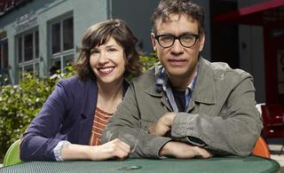
La serie hipster por antonomasia que se ríe de los hipsters regresa a Canal+ con su segunda temporada esta tarde, a las 20:00, muy pocos días después de que se supiera que IFC, el pequeño canal que la emite en Estados Unidos, la había renovado para una tercera entrega, seguramente también de entre seis y ocho episodios. Las peripecias de Fred Armisen y Carrie Brownstein, sus creadores, los llevarán a viajar al sur de California siguiendo el rastro de un barman que hace unos cócteles totalmente locos y excesivos, a repescar a la pareja que ponía pájaros en todas partes (y que ahora se ha pasado al negocio de los encurtidos… más o menos), a enseñarnos nuevas idas de olla de las dueñas de esa librería ecológica y feminista y, en general, a parodiar todos los estereotipos alrededor de la escena cultural de Portland y de los modernos, así en general.
Armisen, conocido por su participación en ‘Saturday Night Live‘, y Brownstein, líder del grupo White Flag y, anteriormente, de Sleater Kinney, se marcan también esta temporada un hilarante homenaje a ‘Battlestar Galactica‘ lleno de cameos y vuelven a contar con la colaboración de unos cuantos actores y músicos conocidos, incluido Kyle MacLachlan como el alcalde de Portland (y el verdadero alcalde de Portland haciendo de su asistente). Y también hacen algo así como una secuela de aquel “Dream of the 90s“ de la primera temporada, pero fijando su mirada en unas cuantas décadas más atrás. ‘Portlandia’ no es un gran éxito de audiencia, pero le da a IFC mucha visibilidad en blogs televisivos (y musicales) y entre los críticos.
La serie no es más que una sucesión de sketches, con sus personajes y situaciones recurrentes, presididos por un humor absurdo que aspira, como decimos, a reírse de esa imagen indie que el resto de Estados Unidos tiene de Portland. Es una comedia de culto entre los hipsters que se mofa de ellos y con la que no hay término de medio, o se la odia o se la adora. Armisen y Brownstein pueden logran momentos realmente inspirados y divertidos, y otros que se vuelven repetitivos demasiado rápido, pero esa es la naturaleza de estas colecciones de gags.
En ¡Vaya Tele! | La nostalgia de los 90 aterriza en Canal+ con ‘Portlandia’
Thu, 22 Mar 2012 18:27:09 GMT
'Smash' renueva por una segunda temporada
'Smash' renueva por una segunda temporada
La temporada 2011-2012 de series está llegando a su final, y aunque las networks se han demorado más que nunca a la hora de anunciar renovaciones, poco a poco vamos conociendo los encargos para el próximo año. Tras la ofensiva de la CBS y la clara renovación de ‘Grimm’, NBC vuelve a mover ficha y acaba de anunciar la renovación de ‘Smash‘ por una segunda temporada. No es de extrañar; ha sido la serie más promocionada por la cadena, ha sido colocada con el mejor lead-in posible (el talent musical ‘The Voice’) y es el drama más visto de la cadena, con mucha diferencia. ‘Smash‘ fue un producto inicialmente creado a la sombra de ‘Glee’, siguiendo la estela de éxito que había iniciado hace ya un par de años la FOX con su serie musical adolescente, pero tras su estreno el pasado mes de febrero dejaron claro que poco o nada tenía que ver con los chicos del McKinley. El desarrollo de una obra de teatro sobre Marilyn Monroe sirve como excusa perfecta para enseñarnos las vidas de todos los que participan en ella, tanto sobre las tablas como detrás de ellas. Y, sobre todo, con número musicales de escándalo que encandilan. La serie se encuentra ahora mismo a mitad de temporada, con siete episodios en el aire de trece quince grabados, después de que la NBC se la guardara para mid-season el año pasado. Sus audiencias están fundamentalmente motivadas por el exitazo que está suponiendo ‘The Voice’ en su segunda temporada, de la que sin embargo no retiene ni el 50% de audiencia (habría que ver cómo se las apañaría ‘Smash’ por sí misma). La segunda temporada tendrá al menos 15 episodios, y aunque NBC aún no ha adelantado cuándo estrenará los nuevos capítulos, es de esperar que siga la misma estrategia de este año. Para una noche que no les resulta desastrosa, no se atreverán a cambiarla. Vía | Deadline, TV Line En ¡Vaya Tele! | ‘Smash’, ¿la estrella de la NBC?
La temporada 2011-2012 de series está llegando a su final, y aunque las networks se han demorado más que nunca a la hora de anunciar renovaciones, poco a poco vamos conociendo los encargos para el próximo año. Tras la ofensiva de la CBS y la clara renovación de ‘Grimm’, NBC vuelve a mover ficha y acaba de anunciar la renovación de ‘Smash‘ por una segunda temporada. No es de extrañar; ha sido la serie más promocionada por la cadena, ha sido colocada con el mejor lead-in posible (el talent musical ‘The Voice’) y es el drama más visto de la cadena, con mucha diferencia.
‘Smash‘ fue un producto inicialmente creado a la sombra de ‘Glee’, siguiendo la estela de éxito que había iniciado hace ya un par de años la FOX con su serie musical adolescente, pero tras su estreno el pasado mes de febrero dejaron claro que poco o nada tenía que ver con los chicos del McKinley. El desarrollo de una obra de teatro sobre Marilyn Monroe sirve como excusa perfecta para enseñarnos las vidas de todos los que participan en ella, tanto sobre las tablas como detrás de ellas. Y, sobre todo, con número musicales de escándalo que encandilan.
La serie se encuentra ahora mismo a mitad de temporada, con siete episodios en el aire de trece quince grabados, después de que la NBC se la guardara para mid-season el año pasado. Sus audiencias están fundamentalmente motivadas por el exitazo que está suponiendo ‘The Voice’ en su segunda temporada, de la que sin embargo no retiene ni el 50% de audiencia (habría que ver cómo se las apañaría ‘Smash’ por sí misma). La segunda temporada tendrá al menos 15 episodios, y aunque NBC aún no ha adelantado cuándo estrenará los nuevos capítulos, es de esperar que siga la misma estrategia de este año. Para una noche que no les resulta desastrosa, no se atreverán a cambiarla.
Vía | Deadline, TV Line
En ¡Vaya Tele! | ‘Smash’, ¿la estrella de la NBC?
Tue, 27 Mar 2012 03:24:18 GMT
'¿Quién quiere casarse con mi hijo?' cierra su exitosa primera temporada
'¿Quién quiere casarse con mi hijo?' cierra su exitosa primera temporada
Hace apenas dos meses, mientras dilucidábamos sobre qué ocurriría con las noches de los lunes tras el final de ‘Águila Roja’ o el inicio de ‘Crematorio’ en la Sexta, Cuatro nos tenía reservada una sorpresa en forma de reality. ‘¿Quién quiere casarse con mi hijo?’ se ha convertido en una de las sorpresas de la temporada, como bien pueden atestiguar varias redes sociales, que casi “echaban humo” a la par que cada nuevo programa se ha ido desgranando. El programa presentado por Luján Argüelles cerró ayer su primera temporada con una gala en la que los solteros tenían que entregar un anillo a su candidata o a su madre (un buen complejo de Edipo siempre da color). El docu-reality, adaptación del formato ‘Who wants to marry my son?’ y producido por Cuatro Cabezas, ha supuesto una auténtica revelación incluso para la propia cadena, que esperaba captar a los seguidores del también amoroso ‘Granjero busca esposa’, un espacio del que es deudor en más de un sentido, pero que no podía imaginar que su programa se convertiría en trending topic un día tras otro. “Ande yo caliente, ríase la gente” podría encajar con la posición de Cuatro respecto a su programa. Cada lunes, las relaciones entre madres/hijos/nueras han sido comentadas al dedillo a través de varios hashtags como el popular y “trendingtopicado” hasta la saciedad #hijostrospidos, que, si bien, parece conllevar ciertas connotaciones negativas, ha permito que las andanzas de los solteros “de oro” fueran analizadas al detalle incluso por los más detractores de este tipo de formatos. De hecho, la propia Cuatro ha “rendido” homenaje los días previos a la final al término tróspido, alojando en su web un vídeo sobre el nacimiento del fenómeno y una historia del mismo, con un repaso por los nombres más populares que se han servido de él para comentar el programa cada lunes. Eso sí, no todo el mundo parece tan contento con la repercusión del programa y no está de más comentar que el Consejo Audiovisual de Cataluña (CAC) ha advertido sobre posibles comentarios racistas, sexistas y discriminatorios en general vertidos en el programa y quiere instar al Ministerio de Industria a que actúe en referencia a ello. ¿Has dicho que estrenabas el 26? No podemos olvidar tampoco el culebrón que ha significado la programación de la final del programa. Pensada para el 19 de marzo, Mediaset decidió estirar su emisión una semana más para intentar jugársela a Antena 3 y su estreno de ‘El número uno’. Así, además, conseguía no eclipsar el último capítulo de ‘Mi gitana’, emitido en su otra cadena: Telecinco. Pues bien, la ira de todos aquellos que no sabían que la final se retrasaba se hizo notar, una vez más, en las redes sociales, de tal manera que, desde los portales oficiales del programa se ofrecieron disculpas a los seguidores. La emisión del especial con que Cuatro “alimentó” a los fans, no fue otra cosa que un refrito de los resúmenes y mejores momentos que muchos habían visto ya y que, aliñados con un par de tomas falsas y alguna escena de casting, pasó de maravilla la prueba de la audiencia, pues aunque fue el episodio de ‘¿Quién quiere casarse con mi hijo?’ menos visto por números de espectadores, consiguió un más que aceptable 9,2 de share. Por si todo esto fuera poco, en la página web de Cuatro, ese mismo 19 de marzo, un ¿error? provocó que se publicara el resultado del concurso (grabado el pasado verano) o lo que es lo mismo, quiénes habían sido las parejas elegidas por los solteros, y aunque se subsanó rápidamente, fue tarde, pues las novedades corrieron como la tinta, una vez más, por las redes sociales. Algunas claves para convertirte en revelación de la temporada ¿Por qué este programa, en principio un reality más de los que pueblan la programación, ha encontrado un hueco en el corazón más gamberro de muchos espectadores? El primer punto a favor de ello ha sido el casting tan heterogéneo de solteros. Desde los que más triunfan con las mujeres, hasta los que sólo se relacionan con chicas a través de su ordenador, ayudado por un brillante montaje que nos alternaba las tramas como si de una serie estuviéramos disfrutando. Y tan pronto visitábamos un pisito decorado con fotos de Sadam Hussein (perdón por no poder omitir este detalle) como viajábamos a una playa de Denia. Otra de las claves es la presencia de las suegras (en muchos momentos, más importantes que los hijos) que nos han permitido ser testigos de romances a un doble nivel: los hijos con las novias, las novias con las madres. La opinión de ellas ha descabalgado las opciones de más de una. Los cruces de argumentos entre madres e hijos sobre las candidatas no tenían desperdicio, y muchos de ellos se producían de la forma más “natural” del mundo, mientras desayunaban en la terraza de un hotel, lo que vendría a ser un menú de tres platos, copa y puro. Estas escenas impostadas, a lo ‘Falcon Crest’, en las que se comentaban las citas de la noche anterior como ninguno de nosotros nunca ha comentado con su madre, han salpicado de detalles kitsch nuestras retinas. Cuando tienes un buen casting, darle al rec de la cámara y dejar que la persona se explaye puede rellenarte, perfectamente, minutos y minutos de tu programa. Los totales en los que las candidatas, madres e hijos daban su punto de vista sobre lo que el espectador acababa de ver han tenido como resultado la creación de grandes frases ya míticas, de ésas que ahora soltamos en la cervecita con nuestros amigos para chanza general y que perdurarán en el tiempo por lo menos, por lo menos, durante dos semanas. Las actividades que los chicos y/o las madres ponían en práctica con las candidatas a amor eterno merecen también una mención. Alguien podría imaginar a los guionistas de la productora en un laboratorio, rodeados de tubos de ensayo y pruebas médicas, observando a los “sujetos” y decidiendo que para el nuevo experimento, ésta se iba a probar una mantilla y ésta otra iba a hacer una reunión de Tupper sex con la abuela de su soltero… y a ver qué pasa. Y como no, las expulsiones sorpresa, las repescas, los giros “inesperados”, las desilusiones, las lágrimas, la competitividad… lo que todo reality tiene, muy bien aderezado con un montaje en el que los programas de Cuatro se están haciendo más que expertos y con una selección musical curiosa y hasta para sacar un disco (como también sucedió con ‘Granjero busca esposa’). Parece que aquí tengo filón Resulta curioso cómo Mediaset ejecuta el “reparto” de realities, y cómo consigue salir victorioso con muchos de ellos. Para Telecinco reserva los más clásicos, los de convivencia pura y dura, con un seguimiento permanente y expulsión por parte del público. A Cuatro, le otorga los docu-realities, los que tienen un punto más chocante, en los que la audiencia no tiene otra cosa que hacer más que quedarse con la boca abierta ante el desfile de situaciones rocambolescas. Le permiten un montaje más dinámico y moderno y el tratamiento de las situaciones como si de un serial se tratara. Y no piensa descansar. Ya os contamos que el programa ha renovado por una segunda temporada, aunque en este caso, parece que los solteros no van a circunscribirse únicamente al ámbito de los hijos, sino que la cosa podría incluir todo tipo de relaciones familiares y amistosas, esto es, quien quiere casarse con mi madre, mi mejor amigo, mi abuelo… (y no me atrevo a seguir). Esto será para la próxima temporada pero ya, próximamente, tendremos de vuelta ‘Perdidos en la tribu’, un docu-reality de un perfil más “duro” e impactante, presentado por Raquel Sánchez Silva. Y es que la franquicia Mediaset sabe que es criticada por su gusto por la telerrealidad, pero no piensa ceder su trono en lo referente al formato. Hasta ahora, no ha tenido rival, y Antena 3 siempre había cojeado en este ámbito, pero el éxito de ‘Tu cara me suena’ le ha lanzado a probar con un estilizado ‘Operación Triunfo’ y la cosa no para ahí, pues tras la reciente fusión con La Sexta, nos hemos enterado de que ya se ha puesto en marcha un reality sobre una autoescuela de famosos, y que los servicios del ‘Hermano mayor’ cambiarán también de cadena, ¿se reabre una guerra de formatos? Pronto podremos valorarlo. En ¡Vaya Tele! | ‘¿Quién quiere casarse con mi hijo?’ tendrá segunda temporada
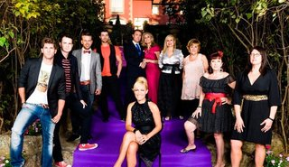
Hace apenas dos meses, mientras dilucidábamos sobre qué ocurriría con las noches de los lunes tras el final de ‘Águila Roja’ o el inicio de ‘Crematorio’ en la Sexta, Cuatro nos tenía reservada una sorpresa en forma de reality. ‘¿Quién quiere casarse con mi hijo?’ se ha convertido en una de las sorpresas de la temporada, como bien pueden atestiguar varias redes sociales, que casi “echaban humo” a la par que cada nuevo programa se ha ido desgranando.
El programa presentado por Luján Argüelles cerró ayer su primera temporada con una gala en la que los solteros tenían que entregar un anillo a su candidata o a su madre (un buen complejo de Edipo siempre da color). El docu-reality, adaptación del formato ‘Who wants to marry my son?’ y producido por Cuatro Cabezas, ha supuesto una auténtica revelación incluso para la propia cadena, que esperaba captar a los seguidores del también amoroso ‘Granjero busca esposa’, un espacio del que es deudor en más de un sentido, pero que no podía imaginar que su programa se convertiría en trending topic un día tras otro.
“Ande yo caliente, ríase la gente” podría encajar con la posición de Cuatro respecto a su programa. Cada lunes, las relaciones entre madres/hijos/nueras han sido comentadas al dedillo a través de varios hashtags como el popular y “trendingtopicado” hasta la saciedad #hijostrospidos, que, si bien, parece conllevar ciertas connotaciones negativas, ha permito que las andanzas de los solteros “de oro” fueran analizadas al detalle incluso por los más detractores de este tipo de formatos.
De hecho, la propia Cuatro ha “rendido” homenaje los días previos a la final al término tróspido, alojando en su web un vídeo sobre el nacimiento del fenómeno y una historia del mismo, con un repaso por los nombres más populares que se han servido de él para comentar el programa cada lunes. Eso sí, no todo el mundo parece tan contento con la repercusión del programa y no está de más comentar que el Consejo Audiovisual de Cataluña (CAC) ha advertido sobre posibles comentarios racistas, sexistas y discriminatorios en general vertidos en el programa y quiere instar al Ministerio de Industria a que actúe en referencia a ello.
¿Has dicho que estrenabas el 26?
No podemos olvidar tampoco el culebrón que ha significado la programación de la final del programa. Pensada para el 19 de marzo, Mediaset decidió estirar su emisión una semana más para intentar jugársela a Antena 3 y su estreno de ‘El número uno’. Así, además, conseguía no eclipsar el último capítulo de ‘Mi gitana’, emitido en su otra cadena: Telecinco. Pues bien, la ira de todos aquellos que no sabían que la final se retrasaba se hizo notar, una vez más, en las redes sociales, de tal manera que, desde los portales oficiales del programa se ofrecieron disculpas a los seguidores.
La emisión del especial con que Cuatro “alimentó” a los fans, no fue otra cosa que un refrito de los resúmenes y mejores momentos que muchos habían visto ya y que, aliñados con un par de tomas falsas y alguna escena de casting, pasó de maravilla la prueba de la audiencia, pues aunque fue el episodio de ‘¿Quién quiere casarse con mi hijo?’ menos visto por números de espectadores, consiguió un más que aceptable 9,2 de share.

Por si todo esto fuera poco, en la página web de Cuatro, ese mismo 19 de marzo, un ¿error? provocó que se publicara el resultado del concurso (grabado el pasado verano) o lo que es lo mismo, quiénes habían sido las parejas elegidas por los solteros, y aunque se subsanó rápidamente, fue tarde, pues las novedades corrieron como la tinta, una vez más, por las redes sociales.
Algunas claves para convertirte en revelación de la temporada
¿Por qué este programa, en principio un reality más de los que pueblan la programación, ha encontrado un hueco en el corazón más gamberro de muchos espectadores? El primer punto a favor de ello ha sido el casting tan heterogéneo de solteros. Desde los que más triunfan con las mujeres, hasta los que sólo se relacionan con chicas a través de su ordenador, ayudado por un brillante montaje que nos alternaba las tramas como si de una serie estuviéramos disfrutando. Y tan pronto visitábamos un pisito decorado con fotos de Sadam Hussein (perdón por no poder omitir este detalle) como viajábamos a una playa de Denia.
Otra de las claves es la presencia de las suegras (en muchos momentos, más importantes que los hijos) que nos han permitido ser testigos de romances a un doble nivel: los hijos con las novias, las novias con las madres. La opinión de ellas ha descabalgado las opciones de más de una. Los cruces de argumentos entre madres e hijos sobre las candidatas no tenían desperdicio, y muchos de ellos se producían de la forma más “natural” del mundo, mientras desayunaban en la terraza de un hotel, lo que vendría a ser un menú de tres platos, copa y puro. Estas escenas impostadas, a lo ‘Falcon Crest’, en las que se comentaban las citas de la noche anterior como ninguno de nosotros nunca ha comentado con su madre, han salpicado de detalles kitsch nuestras retinas.
Cuando tienes un buen casting, darle al rec de la cámara y dejar que la persona se explaye puede rellenarte, perfectamente, minutos y minutos de tu programa. Los totales en los que las candidatas, madres e hijos daban su punto de vista sobre lo que el espectador acababa de ver han tenido como resultado la creación de grandes frases ya míticas, de ésas que ahora soltamos en la cervecita con nuestros amigos para chanza general y que perdurarán en el tiempo por lo menos, por lo menos, durante dos semanas.
Las actividades que los chicos y/o las madres ponían en práctica con las candidatas a amor eterno merecen también una mención. Alguien podría imaginar a los guionistas de la productora en un laboratorio, rodeados de tubos de ensayo y pruebas médicas, observando a los “sujetos” y decidiendo que para el nuevo experimento, ésta se iba a probar una mantilla y ésta otra iba a hacer una reunión de Tupper sex con la abuela de su soltero… y a ver qué pasa.
Y como no, las expulsiones sorpresa, las repescas, los giros “inesperados”, las desilusiones, las lágrimas, la competitividad… lo que todo reality tiene, muy bien aderezado con un montaje en el que los programas de Cuatro se están haciendo más que expertos y con una selección musical curiosa y hasta para sacar un disco (como también sucedió con ‘Granjero busca esposa’).
Parece que aquí tengo filón
Resulta curioso cómo Mediaset ejecuta el “reparto” de realities, y cómo consigue salir victorioso con muchos de ellos. Para Telecinco reserva los más clásicos, los de convivencia pura y dura, con un seguimiento permanente y expulsión por parte del público. A Cuatro, le otorga los docu-realities, los que tienen un punto más chocante, en los que la audiencia no tiene otra cosa que hacer más que quedarse con la boca abierta ante el desfile de situaciones rocambolescas. Le permiten un montaje más dinámico y moderno y el tratamiento de las situaciones como si de un serial se tratara.

Y no piensa descansar. Ya os contamos que el programa ha renovado por una segunda temporada, aunque en este caso, parece que los solteros no van a circunscribirse únicamente al ámbito de los hijos, sino que la cosa podría incluir todo tipo de relaciones familiares y amistosas, esto es, quien quiere casarse con mi madre, mi mejor amigo, mi abuelo… (y no me atrevo a seguir). Esto será para la próxima temporada pero ya, próximamente, tendremos de vuelta ‘Perdidos en la tribu’, un docu-reality de un perfil más “duro” e impactante, presentado por Raquel Sánchez Silva.
Y es que la franquicia Mediaset sabe que es criticada por su gusto por la telerrealidad, pero no piensa ceder su trono en lo referente al formato. Hasta ahora, no ha tenido rival, y Antena 3 siempre había cojeado en este ámbito, pero el éxito de ‘Tu cara me suena’ le ha lanzado a probar con un estilizado ‘Operación Triunfo’ y la cosa no para ahí, pues tras la reciente fusión con La Sexta, nos hemos enterado de que ya se ha puesto en marcha un reality sobre una autoescuela de famosos, y que los servicios del ‘Hermano mayor’ cambiarán también de cadena, ¿se reabre una guerra de formatos? Pronto podremos valorarlo.
En ¡Vaya Tele! | ‘¿Quién quiere casarse con mi hijo?’ tendrá segunda temporada
Mon, 26 Mar 2012 16:24:50 GMT
Jimmy Kimmel presentará los Emmy 2012
Jimmy Kimmel presentará los Emmy 2012
No esperábamos la noticia hasta dentro de varias semanas o meses, pero ABC ya ha iniciado la carrera por los Emmy con el anuncio del presentador de este año. Será Jimmy Kimmel, presentador del late-show ‘Jimmy Kimmel Live!’ el maestro de la ceremonia que tendrá lugar el próximo 23 de septiembre. Tomará el relevo de Jane Lynch el año pasado en FOX, conductora de una gala que, aun a pesar de no resultar siendo una ceremonia desastrosa, careció del encanto de antaño. Parece que la ABC ha aprendido del horrendo resultado que tuvo su experimento de hace cuatro años, cuando decidió que no hubiese un sólo presentador sino cinco a la vez, utilizando para ello a los nominados como Mejor presentador de un reality: Tom Bergeron, Heidi Klum, Howie Mandel, Jeff Probst y Ryan Seacrest. El resultado fue una gala deslucida, sin una guía clara, carente de interés y aburrida como ella sola. Jimmy Kimmel parece, a priori, una opción interesante de cara a los Emmy. Nunca ha presentado la ceremonia en años anteriores, pero es siempre una figura perenne en la gala a la hora de presentar algún premio, y casi siempre con un gag de humor para recordar. El año pasado, mismamente, protagonizó una divertida actuación en el escenario junto a Jimmy Fallon, presentador en 2010. Es frecuente que las cadenas tiren de sus presentadores en el late night para los Emmy (como Conan o’Brien o el propio Fallon), y Kimmel puede hacer algo grande este año. Vía | Deadline En ¡Vaya Tele! | Jane Lynch presentará los Emmy 2011
No esperábamos la noticia hasta dentro de varias semanas o meses, pero ABC ya ha iniciado la carrera por los Emmy con el anuncio del presentador de este año. Será Jimmy Kimmel, presentador del late-show ‘Jimmy Kimmel Live!’ el maestro de la ceremonia que tendrá lugar el próximo 23 de septiembre. Tomará el relevo de Jane Lynch el año pasado en FOX, conductora de una gala que, aun a pesar de no resultar siendo una ceremonia desastrosa, careció del encanto de antaño.
Parece que la ABC ha aprendido del horrendo resultado que tuvo su experimento de hace cuatro años, cuando decidió que no hubiese un sólo presentador sino cinco a la vez, utilizando para ello a los nominados como Mejor presentador de un reality: Tom Bergeron, Heidi Klum, Howie Mandel, Jeff Probst y Ryan Seacrest. El resultado fue una gala deslucida, sin una guía clara, carente de interés y aburrida como ella sola.
Jimmy Kimmel parece, a priori, una opción interesante de cara a los Emmy. Nunca ha presentado la ceremonia en años anteriores, pero es siempre una figura perenne en la gala a la hora de presentar algún premio, y casi siempre con un gag de humor para recordar. El año pasado, mismamente, protagonizó una divertida actuación en el escenario junto a Jimmy Fallon, presentador en 2010. Es frecuente que las cadenas tiren de sus presentadores en el late night para los Emmy (como Conan o’Brien o el propio Fallon), y Kimmel puede hacer algo grande este año.
Vía | Deadline
En ¡Vaya Tele! | Jane Lynch presentará los Emmy 2011
Mon, 26 Mar 2012 15:09:47 GMT
Telecinco prepara la serie 'El Príncipe', narcotráfico en Ceuta
Telecinco prepara la serie 'El Príncipe', narcotráfico en Ceuta
El panorama de la ficción nacional en Telecinco es desastroso. Ninguna de sus últimas propuestas ha funcionado (ni ‘Cheers’, ni ‘Homicidios’, ni ‘La Fuga‘…) y tampoco le quedan demasiadas series consolidadas en su cartera. Sólo ‘Aída’ y ‘La que se avecina’ demuestran salud de hierro, mientras ‘Hospital Central’ sigue denostada por la cadena de Fuencarral y ‘Tierra de Lobos’ nunca ha sido una serie de primer nivel. Es por esto por lo que Telecinco no debe dormirse en los laureles y esforzarse por encontrar la serie que la saque del pozo. Está claro que las series más adultas y de género como ‘Homicidios’ o ‘Punta Escarlata’ no son lo que su público desea ver, por lo que deberían intentarlo por otro camino. Tal vez con ese razonamiento, en Mediaset han echado la mirada al pasado y han encontrado en ‘Sin tetas no hay paraíso‘ su último gran éxito. Así se explica que ahora den luz verde a un proyecto como ‘El Príncipe’, que no oculta sus parecidos razonables con la serie que protagonizó Miguel Ángel Silvestre en la misma cadena. Esta nueva ficción volverá a tratar el mundo del narcotráfico como excusa para narrar una gran historia de amor. La diferencia será que en este caso la acción se traslada a la barriada ceutí de El Príncipe Alfonso, donde además afecta el choque cultural entre la población marroquí y la local. Vía | FormulaTV En ¡Vaya Tele! | Telecinco cancela ‘La Fuga’
El panorama de la ficción nacional en Telecinco es desastroso. Ninguna de sus últimas propuestas ha funcionado (ni ‘Cheers’, ni ‘Homicidios’, ni ‘La Fuga‘…) y tampoco le quedan demasiadas series consolidadas en su cartera. Sólo ‘Aída’ y ‘La que se avecina’ demuestran salud de hierro, mientras ‘Hospital Central’ sigue denostada por la cadena de Fuencarral y ‘Tierra de Lobos’ nunca ha sido una serie de primer nivel.
Es por esto por lo que Telecinco no debe dormirse en los laureles y esforzarse por encontrar la serie que la saque del pozo. Está claro que las series más adultas y de género como ‘Homicidios’ o ‘Punta Escarlata’ no son lo que su público desea ver, por lo que deberían intentarlo por otro camino. Tal vez con ese razonamiento, en Mediaset han echado la mirada al pasado y han encontrado en ‘Sin tetas no hay paraíso‘ su último gran éxito.
Así se explica que ahora den luz verde a un proyecto como ‘El Príncipe’, que no oculta sus parecidos razonables con la serie que protagonizó Miguel Ángel Silvestre en la misma cadena. Esta nueva ficción volverá a tratar el mundo del narcotráfico como excusa para narrar una gran historia de amor. La diferencia será que en este caso la acción se traslada a la barriada ceutí de El Príncipe Alfonso, donde además afecta el choque cultural entre la población marroquí y la local.
Vía | FormulaTV
En ¡Vaya Tele! | Telecinco cancela ‘La Fuga’
Mon, 26 Mar 2012 12:00:00 GMT
'Juego de tronos': Los nuevos personajes de la segunda temporada
'Juego de tronos': Los nuevos personajes de la segunda temporada
You know nothing, Jon Snow — Ygritte
Por si habéis vivido en una base antártica estos meses, aislados del resto del mundo, os recuerdo, una vez más, que la segunda temporada de ‘Juego de tronos‘ regresa a HBO este mismo domingo. Con permiso de ‘Mad Men‘, es el regreso más esperado de la televisión estadounidense y uno de los que ha recibido más hype y ha estado más promocionado del último año. Estos nuevos diez episodios lidiarán con los eventos que George R.R. Martin narra en ‘Choque de reyes‘, el segundo tomo de su saga ‘Canción de Hielo y Fuego’, y el panorama de la serie se va a abrir mucho más, con nuevos escenarios, una mayor escala de casi todos los acontecimientos y, por supuesto, nuevos personajes. ¿Y quiénes son esos nuevos personajes? Para no perdernos, que ya sabemos que la serie no incluye esas útiles guías de casas, reyes y demás que aparecen al final de los libros, vamos a hacer una pequeña guía de las principales nuevas inclusiones en la segunda temporada de ‘Juego de tronos’. Sólo vamos a hablar de los personajes cuya presencia está confirmada por HBO y de los que ya hemos visto alguna foto, porque también sabemos ya que David Benioff y D.B. Weiss han optado por eliminar algunos personajes y combinar otros en uno para poder adaptar el vasto mundo de Martin a la televisión. Los Baratheon La segunda temporada va a seguir las evoluciones de la Guerra de los Cinco Reyes, así que vamos a conocer a esos tres aspirantes al Trono de Hierro que no son ni Joffrey ni Robb. Uno de los que va a tener más importancia en estos episodios es Stannis Baratheon, hermano del difunto Robert y de Renly, autoproclamado también rey. Stannis (Stephen Dillane) es el señor de Rocadragón y, como el de más edad de los hermanos Baratheon, considera que es el legítimo heredero de Robert, ya que tiene sus dudas sobre los derechos de Joffrey. Stannis está ayudado en su empresa por la misteriosa Melisandre (Carice van Houten), una sacerdotisa del dios del fuego R’hllor, un culto que quiere desbancar al de los Siete Dioses en Poniente. Melisandre y Stannis Baratheon. Con Stannis conocemos también a Davos Seaworth (Liam Cunningham), el Caballero de la Cebolla, uno de sus soldados más leales y que mantiene tratos con el comerciante Salladhor Saan (Lucian Msamati). Sin embargo, el mayor de los Baratheon tiene un pequeño problema en su táctica, y es que su hermano Renly ha conseguido el apoyo de buena parte de los vasallos de su familia. Renly está apoyado por la familia de su esposa Margaery (Natalie Dormer), los Tyrell, incluyendo a su hermano Loras, con el que ya sabemos que la relación de Renly es más digamos que cercana. Además, entre sus caballeros figura un personaje que va a dar bastante juego, Brienne de Tarth (Gwendoline Christie), una doncella que prefiere vestirse con una armadura y pelear al lado de Renly. Las Islas del Hierro El quinto y último rey que lucha por el Trono de Hierro es Balon Greyjoy (Patrick Malahide), el padre de Theon, y señor de las Islas del Hierro. Los habitantes del archipiélago son marinos, conocidos en épocas anteriores por saquear los pueblos de la costa hasta que los Stark los contuvieron, y adoran al Dios Ahogado. Los estándares de Balon son demasiado altos para su hijo, que es constantemente comparado con los logros de su hermana Yara (Gemma Whelan). La competencia entre ambos hermanos no favorece que las cosas estén tranquilas. El Norte y el Muro En Invernalia, donde Bran es el nuevo señor, deberían aparecer, teóricamente, dos nuevos personajes, Jojen y Meera, dos hermanos que tienen el don de los “sueños verdes”, pero de los que no se tienen noticias si finalmente los veremos en la segunda temporada. Su hermano Robb, mientras tanto, conoce durante la campaña en el Sur a Jeyne Westerling (Oona Chaplin), lo que va a traerle alguna que otra complicación, dejémoslo ahí. No obstante, es Jon el que sí va a tener serias complicaciones más allá del Muro. Ygritte, la “besada por el fuego“·. Al final de la primera temporada, un grupo de hermanos de la Guardia de la Noche se adentró en las tierras de los salvajes para comprobar si las leyendas sobre los Caminantes Blancos (o los Otros) son ciertas, averiguar qué pasó con Benjen Stark y el resto de exploradores que nunca regresaron y, de pasó, intentar discernir si Mance Rayder, el Rey-Más-Allá-del-Muro, realmente ha reunido un ejército de salvajes para marchar contra el Norte. Por el camino, Jon y compañía conocerán a Craster (Robert Pugh), un salvaje amigo de los Hermanos Negros y una de sus hijas, Gilly (Hannah Murray), y también a uno de los personajes más queridos por los fans, la salvaje Ygritte (Rose Leslie), cuyo pelo rojo le gana el apodo de “besada por el fuego”, y de la que contar cualquier cosa es estropear la sorpresa. En Harrenhal La huida Arya de Desembarco del Rey, por otro lado, la va a llevar al castillo de Harrenhal, un sitio inhóspito y peligroso que se disputan las fuerzas de Tywin Lannister y las tropas de Roose Bolton (Michael McElhatton), aliado de los Stark. Allí, Arya conoce a un prisionero muy particular, Jaqen H’Ghar (Tom Wlaschiha), un mercenario que va a dejar una fuerte impresión en ella. La acción en ese castillo se extiende, si yo no recuerdo mal y cambiando de personajes, entre el segundo libro y el tercero. En el Este Jaqen H’Ghar (izquierda) y Xaro Xhoan Daxos (derecha). ¿Agotados ya de tanta gente nueva? Pues esperad, que nos habíamos dejado a Daenerys y su khalasar al otro lado del Mar Angosto. Además de a los tres dragones de Dany, conoceremos a algún que otro personaje peculiar con el que ella va a cruzarse en su búsqueda de ese ejército que le permita cruzar el mar y reclamar el trono de Poniente para sí. Uno de ellos es el comerciante Xaro Xhoan Daxos (Nonso Anozie), de la ciudad de Qarth, un lugar donde Daenerys va a tener que aprender rápido a reafirmar su poder y a evitar traiciones y dobles juegos. Es probable que se quede algún personaje en el tintero porque, francamente, el salto cuantitativo que se da de ‘Juego de tronos’ a ‘Choque de reyes’ es notable, y Weiss y Benioff han apuntado que van a empezar, además, a mezclar algunas tramas con el tercer volumen, ‘Tormenta de espadas’. La escala de todo lo que va a pasar en esta segunda temporada es bastante mayor. Veremos cómo logran contarlo todo en sólo 10 capítulos. En Zona Fandom | Guía sobre ‘Juego de tronos’ En ¡Vaya Tele! | Las escenas más impactantes de ‘Juego de tronos’
You know nothing, Jon Snow — Ygritte
Por si habéis vivido en una base antártica estos meses, aislados del resto del mundo, os recuerdo, una vez más, que la segunda temporada de ‘Juego de tronos‘ regresa a HBO este mismo domingo. Con permiso de ‘Mad Men‘, es el regreso más esperado de la televisión estadounidense y uno de los que ha recibido más hype y ha estado más promocionado del último año. Estos nuevos diez episodios lidiarán con los eventos que George R.R. Martin narra en ‘Choque de reyes‘, el segundo tomo de su saga ‘Canción de Hielo y Fuego’, y el panorama de la serie se va a abrir mucho más, con nuevos escenarios, una mayor escala de casi todos los acontecimientos y, por supuesto, nuevos personajes.
¿Y quiénes son esos nuevos personajes? Para no perdernos, que ya sabemos que la serie no incluye esas útiles guías de casas, reyes y demás que aparecen al final de los libros, vamos a hacer una pequeña guía de las principales nuevas inclusiones en la segunda temporada de ‘Juego de tronos’. Sólo vamos a hablar de los personajes cuya presencia está confirmada por HBO y de los que ya hemos visto alguna foto, porque también sabemos ya que David Benioff y D.B. Weiss han optado por eliminar algunos personajes y combinar otros en uno para poder adaptar el vasto mundo de Martin a la televisión.
Los Baratheon
La segunda temporada va a seguir las evoluciones de la Guerra de los Cinco Reyes, así que vamos a conocer a esos tres aspirantes al Trono de Hierro que no son ni Joffrey ni Robb. Uno de los que va a tener más importancia en estos episodios es Stannis Baratheon, hermano del difunto Robert y de Renly, autoproclamado también rey. Stannis (Stephen Dillane) es el señor de Rocadragón y, como el de más edad de los hermanos Baratheon, considera que es el legítimo heredero de Robert, ya que tiene sus dudas sobre los derechos de Joffrey. Stannis está ayudado en su empresa por la misteriosa Melisandre (Carice van Houten), una sacerdotisa del dios del fuego R’hllor, un culto que quiere desbancar al de los Siete Dioses en Poniente.
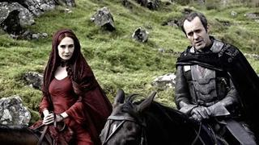Melisandre y Stannis Baratheon.
Con Stannis conocemos también a Davos Seaworth (Liam Cunningham), el Caballero de la Cebolla, uno de sus soldados más leales y que mantiene tratos con el comerciante Salladhor Saan (Lucian Msamati). Sin embargo, el mayor de los Baratheon tiene un pequeño problema en su táctica, y es que su hermano Renly ha conseguido el apoyo de buena parte de los vasallos de su familia. Renly está apoyado por la familia de su esposa Margaery (Natalie Dormer), los Tyrell, incluyendo a su hermano Loras, con el que ya sabemos que la relación de Renly es más digamos que cercana. Además, entre sus caballeros figura un personaje que va a dar bastante juego, Brienne de Tarth (Gwendoline Christie), una doncella que prefiere vestirse con una armadura y pelear al lado de Renly.
Las Islas del Hierro
El quinto y último rey que lucha por el Trono de Hierro es Balon Greyjoy (Patrick Malahide), el padre de Theon, y señor de las Islas del Hierro. Los habitantes del archipiélago son marinos, conocidos en épocas anteriores por saquear los pueblos de la costa hasta que los Stark los contuvieron, y adoran al Dios Ahogado. Los estándares de Balon son demasiado altos para su hijo, que es constantemente comparado con los logros de su hermana Yara (Gemma Whelan). La competencia entre ambos hermanos no favorece que las cosas estén tranquilas.
El Norte y el Muro
En Invernalia, donde Bran es el nuevo señor, deberían aparecer, teóricamente, dos nuevos personajes, Jojen y Meera, dos hermanos que tienen el don de los “sueños verdes”, pero de los que no se tienen noticias si finalmente los veremos en la segunda temporada. Su hermano Robb, mientras tanto, conoce durante la campaña en el Sur a Jeyne Westerling (Oona Chaplin), lo que va a traerle alguna que otra complicación, dejémoslo ahí. No obstante, es Jon el que sí va a tener serias complicaciones más allá del Muro.
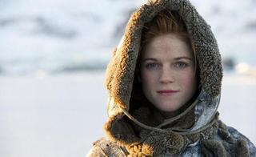Ygritte, la “besada por el fuego“·.
Al final de la primera temporada, un grupo de hermanos de la Guardia de la Noche se adentró en las tierras de los salvajes para comprobar si las leyendas sobre los Caminantes Blancos (o los Otros) son ciertas, averiguar qué pasó con Benjen Stark y el resto de exploradores que nunca regresaron y, de pasó, intentar discernir si Mance Rayder, el Rey-Más-Allá-del-Muro, realmente ha reunido un ejército de salvajes para marchar contra el Norte. Por el camino, Jon y compañía conocerán a Craster (Robert Pugh), un salvaje amigo de los Hermanos Negros y una de sus hijas, Gilly (Hannah Murray), y también a uno de los personajes más queridos por los fans, la salvaje Ygritte (Rose Leslie), cuyo pelo rojo le gana el apodo de “besada por el fuego”, y de la que contar cualquier cosa es estropear la sorpresa.
En Harrenhal
La huida Arya de Desembarco del Rey, por otro lado, la va a llevar al castillo de Harrenhal, un sitio inhóspito y peligroso que se disputan las fuerzas de Tywin Lannister y las tropas de Roose Bolton (Michael McElhatton), aliado de los Stark. Allí, Arya conoce a un prisionero muy particular, Jaqen H’Ghar (Tom Wlaschiha), un mercenario que va a dejar una fuerte impresión en ella. La acción en ese castillo se extiende, si yo no recuerdo mal y cambiando de personajes, entre el segundo libro y el tercero.
En el Este
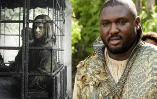Jaqen H’Ghar (izquierda) y Xaro Xhoan Daxos (derecha).
¿Agotados ya de tanta gente nueva? Pues esperad, que nos habíamos dejado a Daenerys y su khalasar al otro lado del Mar Angosto. Además de a los tres dragones de Dany, conoceremos a algún que otro personaje peculiar con el que ella va a cruzarse en su búsqueda de ese ejército que le permita cruzar el mar y reclamar el trono de Poniente para sí. Uno de ellos es el comerciante Xaro Xhoan Daxos (Nonso Anozie), de la ciudad de Qarth, un lugar donde Daenerys va a tener que aprender rápido a reafirmar su poder y a evitar traiciones y dobles juegos.
Es probable que se quede algún personaje en el tintero porque, francamente, el salto cuantitativo que se da de ‘Juego de tronos’ a ‘Choque de reyes’ es notable, y Weiss y Benioff han apuntado que van a empezar, además, a mezclar algunas tramas con el tercer volumen, ‘Tormenta de espadas’. La escala de todo lo que va a pasar en esta segunda temporada es bastante mayor. Veremos cómo logran contarlo todo en sólo 10 capítulos.
En Zona Fandom | Guía sobre ‘Juego de tronos’
En ¡Vaya Tele! | Las escenas más impactantes de ‘Juego de tronos’
Mon, 26 Mar 2012 07:00:00 GMT
'The River', terror light en la amazonía
'The River', terror light en la amazonía
El terror en la televisión, aunque sea tirando por la variante más sobrenatural, hay que saber llevarlo. Más que nada porque no es lo mismo hacer un relato corto o algo que te puedas ventilar en una película (y sus secuelas) que intentar plasmar el género en televisión en abierto, con todas las restricciones y exigencias que eso implica. La semana pasada terminó la primera temporada de ‘The River’, la apuesta de terror sobrenatural de ABC que culminaba las noches de los martes sin demasiada mala suerte en las audiencias. ‘The River’ (creada por Oren Peli y Michael R. Perry) narra la historia de una expedición en la amazonía en busca del prestigioso presentador de documentales Emmet Cole (Bruce Greenwood). La serie está realizada con la técnica del found footage en la cual vemos todo desde el punto de vista de las cámaras usadas para realizar el docurreality que sigue esta búsqueda por parte de la familia de Emmet, Lincoln (Joe Anderson) y Tess (Leslie Hope). Los primeros hallazgos parecen indicar que el Doctor Emmet se había adentrado en la región mística de la Boíuna en busca de la Fuente de la magia. Nos encontraremos pues con una búsqueda por un territorio inexplorado por el hombre blanco lleno de espíritus, demonios, sucesos paranormales… vamos, todo lo que se le pueda ocurrir a los guionistas y se sepa de carrerilla Jahel (Paulina Gaitán), hija de Emilio (Daniel Zacapa), el mecánico del barco y la “wikipedia” de la Boíuna. La expedición está formada, además, por Clark Quitely (Paul Blackthorne) el productor del documental de Cole y de este docurreality; Lena Landry (Eloise Mumford) productora e hija de uno de los cámaras desaparecidos; Kurt (Thomas Kretschmann), responsable de la seguridad de la expedición, que sabe más de lo que dice; y Shaun (A.J. Pouland), el cámara jefe. ‘The River’, presa de sus propias reglas Las series (y películas, obras en general) piden al que observa que entre en sus reglas. Si no entras en ellas la historia se te puede hacer muy cuesta arriba. En ‘The River’ nos encontramos con que intentan seguir las reglas de dos géneros: las reglas del terror/sobrenatural (mostrar poco, personajes ultraplanos…) y el ya nombrado found footage. Si entras en esas dos reglas, admites que ese plano perfectamente iluminado ha sido una cámara del circuito cerrado del barco y que haya cámaras en casi todos los lados, ‘The River’ se convierte en una serie bastante disfrutable. ‘The River’ tiene dos problemas: el primero es ser presa de las propias reglas; con lo que en ciertos momentos se pierde credibilidad y, sobre todo, el poder desarrollar a los personajes, con una actuación parca, por no decir limitada. El segundo es que nos encontramos con una serie que se emite en abierto (aunque sea a las 10 de la noche) por lo que todo es demasiado ligero e incluso el tema “espíritu de la semana” se va desinflando episodio a episodio. Desde un primer momento se vio que la serie no iba tanto hacia el susto como hacia el yuyu. Hacia el agobio, lo perturbador; algo que ya hiciera, por otra parte, ‘American Horror Story‘. En este sentido ‘The River’ cumple su objetivo. Sus primeros episodios guardan los momentos con más fuerza visual y perturbadora (los muñecos, por ejemplo). Lástima que después de eso no hayan logrado alcanzar esas cotas. ‘The River’, terror sobrenatural clásico Tampoco ayuda a valorar la serie la parte que le toca a los personajes. Entre que ya de por sí el formato de ‘The River’ les limita a la hora de actuar y el hecho de que sean bastante planos (o poco definidos, según se vea) y no se les pueda conocer “off the record”, es imposible sentir un mínimo de empatía. Yo veía los episodios de ‘The River’ porque tenía curiosidad por ver el paradero de Emmet y ver el “espíritu de la semana”; pero por mí que se murieran todos los personajes (de hecho se producía en mí una indiferencia total cuando uno estaba a punto de morir). Por otro lado ‘The River’ no es más que una manera de hacer en forma de serie un género bastante clásico como es el terror sobrenatural con el Magus surcando la Amazonía y la Boiuna de escenarios principales. Normalmente los episodios, además, están inspirados en alguna leyenda local digna de la atención de Íker Jiménez, lo que dota a la serie de cierto grado de interés. No voy a negar que a mí ‘The River’ me ha gustado. Aun siendo consciente de sus fallos me ha parecido una serie bastante interesante pero que se ha ejecutado de modo algo desastroso. Sin embargo sigo creyendo que lo que más falla es la forma. Si se hubiera hecho de otra manera, incluso intentando hacer algo mixto (mezclando metraje encontrado con el single-camera tradicional de las series) el resultado creo que hubiera sido bastante mejor. De momento parece ser que los ocho episodios de los que consta esta primera temporada serán los únicos ya que ABC no parece dispuesta a renovarla, aunque Netflix ya se ha interesado por ella. Lamentablemente, y aunque en cierta medida me duela, ‘The River’ es otra serie del montón más que será olvidada a las primeras de cambio. PD. Para los que lo andéis preguntando la primera temporada cierra la trama principal pero el final lo deja un poco en el aire, por si la renovaban. En ¡Vaya Tele! | ‘The river’ llega a Fox España
El terror en la televisión, aunque sea tirando por la variante más sobrenatural, hay que saber llevarlo. Más que nada porque no es lo mismo hacer un relato corto o algo que te puedas ventilar en una película (y sus secuelas) que intentar plasmar el género en televisión en abierto, con todas las restricciones y exigencias que eso implica. La semana pasada terminó la primera temporada de ‘The River’, la apuesta de terror sobrenatural de ABC que culminaba las noches de los martes sin demasiada mala suerte en las audiencias.
‘The River’ (creada por Oren Peli y Michael R. Perry) narra la historia de una expedición en la amazonía en busca del prestigioso presentador de documentales Emmet Cole (Bruce Greenwood). La serie está realizada con la técnica del found footage en la cual vemos todo desde el punto de vista de las cámaras usadas para realizar el docurreality que sigue esta búsqueda por parte de la familia de Emmet, Lincoln (Joe Anderson) y Tess (Leslie Hope). Los primeros hallazgos parecen indicar que el Doctor Emmet se había adentrado en la región mística de la Boíuna en busca de la Fuente de la magia.
Nos encontraremos pues con una búsqueda por un territorio inexplorado por el hombre blanco lleno de espíritus, demonios, sucesos paranormales… vamos, todo lo que se le pueda ocurrir a los guionistas y se sepa de carrerilla Jahel (Paulina Gaitán), hija de Emilio (Daniel Zacapa), el mecánico del barco y la “wikipedia” de la Boíuna. La expedición está formada, además, por Clark Quitely (Paul Blackthorne) el productor del documental de Cole y de este docurreality; Lena Landry (Eloise Mumford) productora e hija de uno de los cámaras desaparecidos; Kurt (Thomas Kretschmann), responsable de la seguridad de la expedición, que sabe más de lo que dice; y Shaun (A.J. Pouland), el cámara jefe.
‘The River’, presa de sus propias reglas
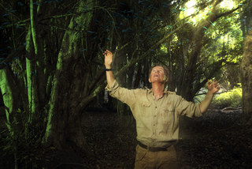
Las series (y películas, obras en general) piden al que observa que entre en sus reglas. Si no entras en ellas la historia se te puede hacer muy cuesta arriba. En ‘The River’ nos encontramos con que intentan seguir las reglas de dos géneros: las reglas del terror/sobrenatural (mostrar poco, personajes ultraplanos…) y el ya nombrado found footage. Si entras en esas dos reglas, admites que ese plano perfectamente iluminado ha sido una cámara del circuito cerrado del barco y que haya cámaras en casi todos los lados, ‘The River’ se convierte en una serie bastante disfrutable.
‘The River’ tiene dos problemas: el primero es ser presa de las propias reglas; con lo que en ciertos momentos se pierde credibilidad y, sobre todo, el poder desarrollar a los personajes, con una actuación parca, por no decir limitada. El segundo es que nos encontramos con una serie que se emite en abierto (aunque sea a las 10 de la noche) por lo que todo es demasiado ligero e incluso el tema “espíritu de la semana” se va desinflando episodio a episodio.
Desde un primer momento se vio que la serie no iba tanto hacia el susto como hacia el yuyu. Hacia el agobio, lo perturbador; algo que ya hiciera, por otra parte, ‘American Horror Story‘. En este sentido ‘The River’ cumple su objetivo. Sus primeros episodios guardan los momentos con más fuerza visual y perturbadora (los muñecos, por ejemplo). Lástima que después de eso no hayan logrado alcanzar esas cotas.
‘The River’, terror sobrenatural clásico
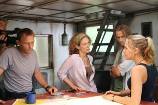
Tampoco ayuda a valorar la serie la parte que le toca a los personajes. Entre que ya de por sí el formato de ‘The River’ les limita a la hora de actuar y el hecho de que sean bastante planos (o poco definidos, según se vea) y no se les pueda conocer “off the record”, es imposible sentir un mínimo de empatía. Yo veía los episodios de ‘The River’ porque tenía curiosidad por ver el paradero de Emmet y ver el “espíritu de la semana”; pero por mí que se murieran todos los personajes (de hecho se producía en mí una indiferencia total cuando uno estaba a punto de morir).
Por otro lado ‘The River’ no es más que una manera de hacer en forma de serie un género bastante clásico como es el terror sobrenatural con el Magus surcando la Amazonía y la Boiuna de escenarios principales. Normalmente los episodios, además, están inspirados en alguna leyenda local digna de la atención de Íker Jiménez, lo que dota a la serie de cierto grado de interés.
No voy a negar que a mí ‘The River’ me ha gustado. Aun siendo consciente de sus fallos me ha parecido una serie bastante interesante pero que se ha ejecutado de modo algo desastroso. Sin embargo sigo creyendo que lo que más falla es la forma. Si se hubiera hecho de otra manera, incluso intentando hacer algo mixto (mezclando metraje encontrado con el single-camera tradicional de las series) el resultado creo que hubiera sido bastante mejor. De momento parece ser que los ocho episodios de los que consta esta primera temporada serán los únicos ya que ABC no parece dispuesta a renovarla, aunque Netflix ya se ha interesado por ella. Lamentablemente, y aunque en cierta medida me duela, ‘The River’ es otra serie del montón más que será olvidada a las primeras de cambio.
PD. Para los que lo andéis preguntando la primera temporada cierra la trama principal pero el final lo deja un poco en el aire, por si la renovaban.
En ¡Vaya Tele! | ‘The river’ llega a Fox España
Sun, 25 Mar 2012 19:59:58 GMT
'Being Human' (UK) volverá con una quinta temporada sin sus personajes originales
'Being Human' (UK) volverá con una quinta temporada sin sus personajes originales
BBC ha aprovechado que hoy se emitía el último capítulo de la cuarta temporada de ‘Being Human‘ para anunciar que la serie volverá el próximo año con nuevos capítulos. La decisión se ha postergado esta vez hasta el último momento, motivado sobre todo por el proceso de cambio que ha experimentado la serie en estos ocho capítulos; había que ver cómo aceptaba la audiencia el recambio de personajes y, sobre todo, comprobar si existía algún desgaste después de cuatro años con la misma historia. Nada más alejado de la realidad. La quinta temporada de ‘Being Human‘ será, además, la primera sin ninguno de los personajes iniciales de la serie. A la marcha de Aidan Turner (Mitchell) el año pasado se le sumó la de Russell Tovey (George) en el primer capítulo de esta cuarta temporada; el primero, para emprender nuevos proyectos (entre ellos la película ‘The Hobbit’), y el segundo por sentir “extraña” la serie sin su colega y considerar que su tiempo en ella ya había terminado. A ellos se les une ahora Lenora Crichlow (Annie), que también se ha despedido de la audiencia en el último episodio. No obstante, parece que en BBC Three han sabido reponer perfectamente a sus personajes principales. Michael Socha (hermano de Lauren Socha, la gran Kelly de ‘Misfits’) ha hecho las veces de hombre lobo en esta temporada, después de haber sido recurrente el pasado año; Damien Molony ha conseguido que casi olvidemos la figura del vampiro interpretado por Turner; y finalmente, un nuevo personaje ha sido presentado en los últimos episodios para cubrir el lugar del fantasma, dejando al trío protagonista nuevamente reconstituido. No obstante, la marcha de Lenora Crichlow para siempre aún no se ha hecho oficial, aunque parece evidente. Eso sí, podría volver para hacer algún cameo, que en esta serie se saben todas las tretas para devolvernos antiguos personajes. Tras la renovación de ‘Being Human’ queda ahora por saber el futuro de otras series del tercer canal de la BBC, como la nueva ‘The Fades‘ o la serie sobre lesbianas ‘Lip Service‘, que aún tiene pendiente estrenar su segunda temporada. Vía | Twitter @BBCThree En ¡Vaya Tele! | ‘Being Human’, una bala en forma de hombre lobo
BBC ha aprovechado que hoy se emitía el último capítulo de la cuarta temporada de ‘Being Human‘ para anunciar que la serie volverá el próximo año con nuevos capítulos. La decisión se ha postergado esta vez hasta el último momento, motivado sobre todo por el proceso de cambio que ha experimentado la serie en estos ocho capítulos; había que ver cómo aceptaba la audiencia el recambio de personajes y, sobre todo, comprobar si existía algún desgaste después de cuatro años con la misma historia. Nada más alejado de la realidad.
La quinta temporada de ‘Being Human‘ será, además, la primera sin ninguno de los personajes iniciales de la serie. A la marcha de Aidan Turner (Mitchell) el año pasado se le sumó la de Russell Tovey (George) en el primer capítulo de esta cuarta temporada; el primero, para emprender nuevos proyectos (entre ellos la película ‘The Hobbit’), y el segundo por sentir “extraña” la serie sin su colega y considerar que su tiempo en ella ya había terminado. A ellos se les une ahora Lenora Crichlow (Annie), que también se ha despedido de la audiencia en el último episodio.
No obstante, parece que en BBC Three han sabido reponer perfectamente a sus personajes principales. Michael Socha (hermano de Lauren Socha, la gran Kelly de ‘Misfits’) ha hecho las veces de hombre lobo en esta temporada, después de haber sido recurrente el pasado año; Damien Molony ha conseguido que casi olvidemos la figura del vampiro interpretado por Turner; y finalmente, un nuevo personaje ha sido presentado en los últimos episodios para cubrir el lugar del fantasma, dejando al trío protagonista nuevamente reconstituido.
No obstante, la marcha de Lenora Crichlow para siempre aún no se ha hecho oficial, aunque parece evidente. Eso sí, podría volver para hacer algún cameo, que en esta serie se saben todas las tretas para devolvernos antiguos personajes. Tras la renovación de ‘Being Human’ queda ahora por saber el futuro de otras series del tercer canal de la BBC, como la nueva ‘The Fades‘ o la serie sobre lesbianas ‘Lip Service‘, que aún tiene pendiente estrenar su segunda temporada.
Vía | Twitter @BBCThree
En ¡Vaya Tele! | ‘Being Human’, una bala en forma de hombre lobo
Sun, 25 Mar 2012 17:15:32 GMT
'A lomos de La Bestia', vuelve Jon Sistiaga con un impactante trabajo
'A lomos de La Bestia', vuelve Jon Sistiaga con un impactante trabajo
Jon Sistiaga vuelve a su casa patria con otro impactante trabajo, esta vez de nuevo en clave de documental. Un arriesgado trabajo periodístico le ha llevado, a él y a su equipo, esta vez a La Bestia. Ese es el nombre por el que se conoce a un tenebroso tren de mercancías que cruza México hasta la frontera estadounidense, en el que se suben diariamente cientos de migrantes para intentar alcanzar el sueño americano. Jon ha querido ser por un día uno de esos migrantes, montando a bordo de La Bestia y hablando con los protagonistas en primera persona, mientras vivía este fatídico viaje en el que cada trayecto se cobra mutilados al caerse del tren, robados, humillados, violadas, secuestrados e incluso asesinados. “Sobre todo no te duermas” es una de las frases que quedan grabadas en un documental compuesto por ingredientes 100% de realidad y otros 100% de alto impacto. Los que conocéis la carerra de Jon y lo que ha sido capaz y es capaz de hacer por un buen reportaje, en este documental no dejará indiferente a nadie. Plantea seriamente el problema, va al grano desde el minuto cero y consigue hacerte partícipe del terrible viaje, aunque no penetra en exceso en historias personales de los migrantes en los que se encuentra en los vagones si no que se ocupa de señalar directamente la situación, punto que se agradece. El simple hecho de dar a conocer a La Bestia desde dentro y que hayan salido ilesos, hace que merezca la pena visionar la cinta. Aunque según relata, dicho tren es únicamente la punta del iceberg del problema. Narcos, mafias, secuestros de maquinistas, compinches y tráficos completan la trama. Quizás Sistiaga sea únicamente uno de los pocos periodistas de investigación nacionales preparados para un reportaje de este calibre en el que te preguntas constantemente cómo es posible que se haya metido en una situación tan inestable en la que en cualquier momento puede ocurrir cualquier cosa y consigan llegar a la frontera. Una cinta de 53 minutos para los que están dispuestos a acercarse a la realidad más cruda, dramática e impactante que se estará emitiendo en Canal+ durante los meses de Marzo y Abril en distintos horarios. En ¡Vaya Tele! | Documentales En ¡Vaya Tele! | ‘Gasland’, impactante documental sobre la obtención de gas natural en EEUU
Jon Sistiaga vuelve a su casa patria con otro impactante trabajo, esta vez de nuevo en clave de documental. Un arriesgado trabajo periodístico le ha llevado, a él y a su equipo, esta vez a La Bestia. Ese es el nombre por el que se conoce a un tenebroso tren de mercancías que cruza México hasta la frontera estadounidense, en el que se suben diariamente cientos de migrantes para intentar alcanzar el sueño americano.
Jon ha querido ser por un día uno de esos migrantes, montando a bordo de La Bestia y hablando con los protagonistas en primera persona, mientras vivía este fatídico viaje en el que cada trayecto se cobra mutilados al caerse del tren, robados, humillados, violadas, secuestrados e incluso asesinados. “Sobre todo no te duermas” es una de las frases que quedan grabadas en un documental compuesto por ingredientes 100% de realidad y otros 100% de alto impacto.
Los que conocéis la carerra de Jon y lo que ha sido capaz y es capaz de hacer por un buen reportaje, en este documental no dejará indiferente a nadie. Plantea seriamente el problema, va al grano desde el minuto cero y consigue hacerte partícipe del terrible viaje, aunque no penetra en exceso en historias personales de los migrantes en los que se encuentra en los vagones si no que se ocupa de señalar directamente la situación, punto que se agradece. El simple hecho de dar a conocer a La Bestia desde dentro y que hayan salido ilesos, hace que merezca la pena visionar la cinta. Aunque según relata, dicho tren es únicamente la punta del iceberg del problema.
Narcos, mafias, secuestros de maquinistas, compinches y tráficos completan la trama. Quizás Sistiaga sea únicamente uno de los pocos periodistas de investigación nacionales preparados para un reportaje de este calibre en el que te preguntas constantemente cómo es posible que se haya metido en una situación tan inestable en la que en cualquier momento puede ocurrir cualquier cosa y consigan llegar a la frontera.
Una cinta de 53 minutos para los que están dispuestos a acercarse a la realidad más cruda, dramática e impactante que se estará emitiendo en Canal+ durante los meses de Marzo y Abril en distintos horarios.
En ¡Vaya Tele! | Documentales
En ¡Vaya Tele! | ‘Gasland’, impactante documental sobre la obtención de gas natural en EEUU
Sun, 25 Mar 2012 05:00:00 GMT
'Avanti', el "concurshow" que sustituirá a 'Atrapa un Millón'
'Avanti', el "concurshow" que sustituirá a 'Atrapa un Millón'
¿Recordáis esos maravillosos días en los que ‘Atrapa un Millón’ superaba en espectadores a ‘Sálvame Deluxe’ en su franja de coincidencia? Los días de gloria del concurso de Sobera ya pasaron a mejor vida, y parece que Antena 3 quiere mover ficha rápidamente para no desgastar también el “Atrapa” diario. El próximo viernes veremos el último programa de ‘Atrapa un Millón’ en prime time, y poco después será sustituido por un nuevo concurso mucho más vistoso y también presentado por Carlos Sobera: la versión patria de ‘Avanti un altro’, que aquí se llamará ‘Avanti’. Antena 3 ha visto un filón en su programación blanca y neutral, y lo que antes era terreno del corazón ahora es un espacio entretenido para toda la familia. Con ‘Avanti’ pretenden seguir esa senda, pero transformando un simple concurso de programas y respuestas en un “concurshow“, como ellos mismos lo llaman. Música, baile, cómicos profesionales y mucho humor para dar vidilla a la noche del viernes e intentar recuperar el terreno perdido en los últimos meses. ‘Atrapa un millón’ ha pasado de ser una oferta competitiva a un producto mediocre, y ésta puede ser una vuelta de tuerca interesante. No obstante, Antena 3 no las tiene todas consigo, y es probable que se caiga con todo el equipo por culpa de este recambio. La mecánica y la descripción de ‘Avanti’ quizá nos recuerde demasiado a ‘Supershow’, la gala semanal de variedades que Antena 3 estrenó en el verano de 2004, también presentado por Carlos Sobera y que se mantuvo sólo cinco semanas en antena. Las cosas han cambiado mucho desde entonces, y lo que hace ocho años era un fracaso, ahora puede resurgir con fuerza. Al fin y al cabo, la televisión no es más que un ciclo. Veremos. Vía | Vertele En ¡Vaya Tele! | Antena 3 avanza hacia el ‘Atrapa un millón’ 24 Horas
¿Recordáis esos maravillosos días en los que ‘Atrapa un Millón’ superaba en espectadores a ‘Sálvame Deluxe’ en su franja de coincidencia? Los días de gloria del concurso de Sobera ya pasaron a mejor vida, y parece que Antena 3 quiere mover ficha rápidamente para no desgastar también el “Atrapa” diario. El próximo viernes veremos el último programa de ‘Atrapa un Millón’ en prime time, y poco después será sustituido por un nuevo concurso mucho más vistoso y también presentado por Carlos Sobera: la versión patria de ‘Avanti un altro’, que aquí se llamará ‘Avanti’.
Antena 3 ha visto un filón en su programación blanca y neutral, y lo que antes era terreno del corazón ahora es un espacio entretenido para toda la familia. Con ‘Avanti’ pretenden seguir esa senda, pero transformando un simple concurso de programas y respuestas en un “concurshow“, como ellos mismos lo llaman. Música, baile, cómicos profesionales y mucho humor para dar vidilla a la noche del viernes e intentar recuperar el terreno perdido en los últimos meses. ‘Atrapa un millón’ ha pasado de ser una oferta competitiva a un producto mediocre, y ésta puede ser una vuelta de tuerca interesante.
No obstante, Antena 3 no las tiene todas consigo, y es probable que se caiga con todo el equipo por culpa de este recambio. La mecánica y la descripción de ‘Avanti’ quizá nos recuerde demasiado a ‘Supershow’, la gala semanal de variedades que Antena 3 estrenó en el verano de 2004, también presentado por Carlos Sobera y que se mantuvo sólo cinco semanas en antena. Las cosas han cambiado mucho desde entonces, y lo que hace ocho años era un fracaso, ahora puede resurgir con fuerza. Al fin y al cabo, la televisión no es más que un ciclo. Veremos.
Vía | Vertele
En ¡Vaya Tele! | Antena 3 avanza hacia el ‘Atrapa un millón’ 24 Horas
Sat, 24 Mar 2012 14:10:39 GMT
"Draping": hay cientos de personas posando como Don Draper, la imagen de la semana
"Draping": hay cientos de personas posando como Don Draper, la imagen de la semana
Hacer el Draper, eso es lo que se está poniendo de moda justo ahora que ‘Mad Men’ está a punto de regresar (¡Por fin!). Y no, con lo de hacer el Draper no nos referimos a coger una carabina y, cigarro en boca, liarse a tiros con las palomas. Esto no va de Betty, sino de Don: su silueta, la que ha servido como una de las imágenes icónicas de la serie de Matthew Weiner, está siendo imitada por cientos de personas, algún que otro perro y hasta Ronald McDonald. Podéis ver a la gente haciendo Draping en, cómo no, Tumblr, el sitio ideal para este tipo de cosas. Y también en twitter, si lo preferís. Y por si fuera poco, la gracia de extender el brazo, ponerte en posición de “descanso del guerrero publicitario” y, opcional, pillar un cigarrillo (copa no incluida) también ha dado el salto a Pinterest, la red social más de moda de los últimos tiempos. Sea como sea, queráis imitarlo o no, Don Draper está ya a punto de regresar. Y no, mil imágenes de imitadores tampoco sirven para aguantar la espera. Matthew, esta vez te has hecho de rogar demasiado, pero te lo perdonamos por la premiere de dos horas de mañana. Vía | AMC En ¡Vaya Tele! | La quinta de ‘Mad Men’ llega el 20 de mayo a Canal+
Hacer el Draper, eso es lo que se está poniendo de moda justo ahora que ‘Mad Men’ está a punto de regresar (¡Por fin!). Y no, con lo de hacer el Draper no nos referimos a coger una carabina y, cigarro en boca, liarse a tiros con las palomas. Esto no va de Betty, sino de Don: su silueta, la que ha servido como una de las imágenes icónicas de la serie de Matthew Weiner, está siendo imitada por cientos de personas, algún que otro perro y hasta Ronald McDonald.
Podéis ver a la gente haciendo Draping en, cómo no, Tumblr, el sitio ideal para este tipo de cosas. Y también en twitter, si lo preferís. Y por si fuera poco, la gracia de extender el brazo, ponerte en posición de “descanso del guerrero publicitario” y, opcional, pillar un cigarrillo (copa no incluida) también ha dado el salto a Pinterest, la red social más de moda de los últimos tiempos.
Sea como sea, queráis imitarlo o no, Don Draper está ya a punto de regresar. Y no, mil imágenes de imitadores tampoco sirven para aguantar la espera. Matthew, esta vez te has hecho de rogar demasiado, pero te lo perdonamos por la premiere de dos horas de mañana.
Vía | AMC
En ¡Vaya Tele! | La quinta de ‘Mad Men’ llega el 20 de mayo a Canal+
Sat, 24 Mar 2012 08:00:00 GMT
'El número uno', lo que necesitas saber
'El número uno', lo que necesitas saber
Antena 3 no ha parado hasta encontrar a los 100 cantantes que competirán por ser el mejor artista, demostrando de qué son capaces ante un jurado formado por cinco grandes voces del panorama musical español. Ésta es la carta de presentación con la que cuenta ‘El número uno’, el nuevo talent show de la cadena, producido por Gestmusic, con el que Antena 3 quiere quitarse esa espinita que tiene clavada desde que se inició en España el boom de este tipo de formatos. El programa ha conseguido despertar bastante expectación de cara a su estreno. Viene precedido por otros formatos como ‘Tu cara me suena’ (también con el sello de la misma productora) y por esa nueva línea que Antena 3 le ha dado a toda su programación durante esta temporada. La única duda que gira en torno a ‘El número uno’ es si podrá alejarse de otros talent shows, un género muy explotado por nuestra televisión y que puede provocar rechazo en el espectador. Pero, si tenemos en cuenta lo que hemos visto recientemente, esto solo puede tratarse de la excusa para presentar algo realmente original que sepa diferenciarse del resto y atraer a la audiencia mayoritaria. 100 concursantes buscan ser el número uno ‘El número uno’ cuenta con uno de los mayores cásting que se hayan realizado hasta la fecha. Un total de 100 concursantes han sido elegidos (mitad por un jurado profesional y mitad a través de la página web de Antena 3) para que participen en el talent show que quiere elegir al mejor de todos ellos. Los creadores del programa han avisado que los participantes no son amateurs en esto de la canción, sino profesionales de todo el país, por lo que no descartamos que ‘El número uno’ también pretenda convertirse en la nueva plataforma para alguno de ellos. Al frente del programa se encuentra Paula Vázquez, que vuelve a Antena 3 después de que no consiguiera encontrar su hueco dentro de la familia Mediaset. Cara reconocida de programas como ‘La isla de los famosos’ o ‘Fama, ¡a bailar!’, la cadena fichó a Paula Vázquez a finales de 2011 para convertirla en una de sus presentadoras estrellas, algo que quedará demostrado en cuanto arranque ‘El número uno‘, un programa con el que se muestra muy a gusto y con el que puede encajar a la perfección. Un jurado poco habitual en televisión Si hay algo en lo que destaca ‘El número uno’ es en la apuesta que ha hecho por encontrar un jurado lleno de caras reconocidas que también se situaran como profesionales del mundo de la música. Por eso, hasta la fecha ‘El número uno’ se ha promocionado vendiendo a ese jurado compuesto por Miguel Bosé, Ana Torroja, Sergio Dalma, Natalia Jiménez y David Bustamante, cinco profesionales muy distintos entre sí que podrían revelarse como el gran acierto de la temporada. El jurado será el encargado de valorar las actuaciones cada semana. Además, cuentan con la opción de blindar a sus favoritos para que no sean expulsados del programa. El resto de concursantes tendrá que enfrentarse a la valoración de la audiencia, a partir de la cual se elaborará un ranking de popularidad para ver quién es el favorito de los espectadores. Los menos votados se tendrán que enfrentar en un duelo musical y de nuevo será decisión del jurado decidir quién no seguirá teniendo opciones de convertirse en el número uno. Del partido que le saquen al jurado y de lo que sean capaces de sorprender los concursantes podría encontrarse el éxito o el fracaso del formato, que destaca porque no contará con proceso de aprendizaje ni veremos a los participantes cómo se preparan para la actuación que tendrá que defender cada semana. Al parecer, todo está centrado en el mundo de la música, alejando cualquier olor a reality que un programa de estas características pudiera desprender y mostrando solo pinceladas sobre la historia de los participantes o cómo se han preparado la canción. ‘El número uno’, estreno lunes 26 de marzo ‘El número uno’ se estrenará el lunes 26 de marzo en prime time, instalándose en un día en el que a priori no debería tener problemas para conseguir un buen dato de audiencia. El programa cuenta con la firma de Gestmusic, una productora experta en los talent shows. En el pasado, Gestmusic ha sido la responsable del éxito de programas como ‘Operación Triunfo’ y de espacios que se emiten en la actualidad como ‘Tú sí que vales’ o ‘Tu cara me suena’. ‘El número uno’ se dividirá en galas semanales y en cada una de ellas contará con la presencia de un artista invitado, que tendrá un hueco reservado para compartir su música con todos los espectadores. ¿Por qué hay que verlo? ‘El número uno’ se presenta para todos aquellos que quieren seguir confiando en el nuevo modelo de televisión que, con lentitud, está elaborando Antena 3. Con este programa la cadena quiere reafirmarse en que otra programación es posible, apostando en este caso por un espacio en el que prima la música por encima de todo. También llamará tu atención si quieres ver a cinco reconocidos cantantes poniéndose en la piel de jurado, sobre todo si sientes curiosidad por saber qué tienen que aportar a la hora de hacer sus valoraciones, algo que puede ser de lo más aburrido o, por el contrario, convertirse en lo más atractivo del programa. Y, por supuesto, está dirigido a todos los amantes de los talent shows porque, lo vendan como lo vendan, ‘El número uno’ no deja de ser un programa en el que un grupo de personas con talento deciden ir a la televisión a demostrarlo. En ¡Vaya tele! | El estreno de ‘El número uno’, ¿víctima rebote de la huelga?
Antena 3 no ha parado hasta encontrar a los 100 cantantes que competirán por ser el mejor artista, demostrando de qué son capaces ante un jurado formado por cinco grandes voces del panorama musical español. Ésta es la carta de presentación con la que cuenta ‘El número uno’, el nuevo talent show de la cadena, producido por Gestmusic, con el que Antena 3 quiere quitarse esa espinita que tiene clavada desde que se inició en España el boom de este tipo de formatos.
El programa ha conseguido despertar bastante expectación de cara a su estreno. Viene precedido por otros formatos como ‘Tu cara me suena’ (también con el sello de la misma productora) y por esa nueva línea que Antena 3 le ha dado a toda su programación durante esta temporada. La única duda que gira en torno a ‘El número uno’ es si podrá alejarse de otros talent shows, un género muy explotado por nuestra televisión y que puede provocar rechazo en el espectador. Pero, si tenemos en cuenta lo que hemos visto recientemente, esto solo puede tratarse de la excusa para presentar algo realmente original que sepa diferenciarse del resto y atraer a la audiencia mayoritaria.
100 concursantes buscan ser el número uno
‘El número uno’ cuenta con uno de los mayores cásting que se hayan realizado hasta la fecha. Un total de 100 concursantes han sido elegidos (mitad por un jurado profesional y mitad a través de la página web de Antena 3) para que participen en el talent show que quiere elegir al mejor de todos ellos. Los creadores del programa han avisado que los participantes no son amateurs en esto de la canción, sino profesionales de todo el país, por lo que no descartamos que ‘El número uno’ también pretenda convertirse en la nueva plataforma para alguno de ellos.
Al frente del programa se encuentra Paula Vázquez, que vuelve a Antena 3 después de que no consiguiera encontrar su hueco dentro de la familia Mediaset. Cara reconocida de programas como ‘La isla de los famosos’ o ‘Fama, ¡a bailar!’, la cadena fichó a Paula Vázquez a finales de 2011 para convertirla en una de sus presentadoras estrellas, algo que quedará demostrado en cuanto arranque ‘El número uno‘, un programa con el que se muestra muy a gusto y con el que puede encajar a la perfección.
Un jurado poco habitual en televisión
Si hay algo en lo que destaca ‘El número uno’ es en la apuesta que ha hecho por encontrar un jurado lleno de caras reconocidas que también se situaran como profesionales del mundo de la música. Por eso, hasta la fecha ‘El número uno’ se ha promocionado vendiendo a ese jurado compuesto por Miguel Bosé, Ana Torroja, Sergio Dalma, Natalia Jiménez y David Bustamante, cinco profesionales muy distintos entre sí que podrían revelarse como el gran acierto de la temporada.
El jurado será el encargado de valorar las actuaciones cada semana. Además, cuentan con la opción de blindar a sus favoritos para que no sean expulsados del programa. El resto de concursantes tendrá que enfrentarse a la valoración de la audiencia, a partir de la cual se elaborará un ranking de popularidad para ver quién es el favorito de los espectadores. Los menos votados se tendrán que enfrentar en un duelo musical y de nuevo será decisión del jurado decidir quién no seguirá teniendo opciones de convertirse en el número uno.
Del partido que le saquen al jurado y de lo que sean capaces de sorprender los concursantes podría encontrarse el éxito o el fracaso del formato, que destaca porque no contará con proceso de aprendizaje ni veremos a los participantes cómo se preparan para la actuación que tendrá que defender cada semana. Al parecer, todo está centrado en el mundo de la música, alejando cualquier olor a reality que un programa de estas características pudiera desprender y mostrando solo pinceladas sobre la historia de los participantes o cómo se han preparado la canción.
‘El número uno’, estreno lunes 26 de marzo
‘El número uno’ se estrenará el lunes 26 de marzo en prime time, instalándose en un día en el que a priori no debería tener problemas para conseguir un buen dato de audiencia. El programa cuenta con la firma de Gestmusic, una productora experta en los talent shows. En el pasado, Gestmusic ha sido la responsable del éxito de programas como ‘Operación Triunfo’ y de espacios que se emiten en la actualidad como ‘Tú sí que vales’ o ‘Tu cara me suena’. ‘El número uno’ se dividirá en galas semanales y en cada una de ellas contará con la presencia de un artista invitado, que tendrá un hueco reservado para compartir su música con todos los espectadores.
¿Por qué hay que verlo?
‘El número uno’ se presenta para todos aquellos que quieren seguir confiando en el nuevo modelo de televisión que, con lentitud, está elaborando Antena 3. Con este programa la cadena quiere reafirmarse en que otra programación es posible, apostando en este caso por un espacio en el que prima la música por encima de todo. También llamará tu atención si quieres ver a cinco reconocidos cantantes poniéndose en la piel de jurado, sobre todo si sientes curiosidad por saber qué tienen que aportar a la hora de hacer sus valoraciones, algo que puede ser de lo más aburrido o, por el contrario, convertirse en lo más atractivo del programa. Y, por supuesto, está dirigido a todos los amantes de los talent shows porque, lo vendan como lo vendan, ‘El número uno’ no deja de ser un programa en el que un grupo de personas con talento deciden ir a la televisión a demostrarlo.
En ¡Vaya tele! | El estreno de ‘El número uno’, ¿víctima rebote de la huelga?
Fri, 23 Mar 2012 09:00:00 GMT
'Portlandia' y sus modernos regresan a Canal+
'Portlandia' y sus modernos regresan a Canal+
La serie hipster por antonomasia que se ríe de los hipsters regresa a Canal+ con su segunda temporada esta tarde, a las 20:00, muy pocos días después de que se supiera que IFC, el pequeño canal que la emite en Estados Unidos, la había renovado para una tercera entrega, seguramente también de entre seis y ocho episodios de unos 12 episodios. Las peripecias de Fred Armisen y Carrie Brownstein, sus creadores, los llevarán a viajar al sur de California siguiendo el rastro de un barman que hace unos cócteles totalmente locos y excesivos, a repescar a la pareja que ponía pájaros en todas partes (y que ahora se ha pasado al negocio de los encurtidos… más o menos), a enseñarnos nuevas idas de olla de las dueñas de esa librería ecológica y feminista y, en general, a parodiar todos los estereotipos alrededor de la escena cultural de Portland y de los modernos, así en general. Armisen, conocido por su participación en ‘Saturday Night Live‘, y Brownstein, líder del grupo White Flag y, anteriormente, de Sleater Kinney, se marcan también esta temporada un hilarante homenaje a ‘Battlestar Galactica‘ lleno de cameos y vuelven a contar con la colaboración de unos cuantos actores y músicos conocidos, incluido Kyle MacLachlan como el alcalde de Portland (y el verdadero alcalde de Portland haciendo de su asistente). Y también hacen algo así como una secuela de aquel “Dream of the 90s“ de la primera temporada, pero fijando su mirada en unas cuantas décadas más atrás. ‘Portlandia’ no es un gran éxito de audiencia, pero le da a IFC mucha visibilidad en blogs televisivos (y musicales) y entre los críticos. La serie no es más que una sucesión de sketches, con sus personajes y situaciones recurrentes, presididos por un humor absurdo que aspira, como decimos, a reírse de esa imagen indie que el resto de Estados Unidos tiene de Portland. Es una comedia de culto entre los hipsters que se mofa de ellos y con la que no hay término de medio, o se la odia o se la adora. Armisen y Brownstein pueden logran momentos realmente inspirados y divertidos, y otros que se vuelven repetitivos demasiado rápido, pero esa es la naturaleza de estas colecciones de gags. En ¡Vaya Tele! | La nostalgia de los 90 aterriza en Canal+ con ‘Portlandia’
La serie hipster por antonomasia que se ríe de los hipsters regresa a Canal+ con su segunda temporada esta tarde, a las 20:00, muy pocos días después de que se supiera que IFC, el pequeño canal que la emite en Estados Unidos, la había renovado para una tercera entrega, seguramente también de entre seis y ocho episodios de unos 12 episodios. Las peripecias de Fred Armisen y Carrie Brownstein, sus creadores, los llevarán a viajar al sur de California siguiendo el rastro de un barman que hace unos cócteles totalmente locos y excesivos, a repescar a la pareja que ponía pájaros en todas partes (y que ahora se ha pasado al negocio de los encurtidos… más o menos), a enseñarnos nuevas idas de olla de las dueñas de esa librería ecológica y feminista y, en general, a parodiar todos los estereotipos alrededor de la escena cultural de Portland y de los modernos, así en general.
Armisen, conocido por su participación en ‘Saturday Night Live‘, y Brownstein, líder del grupo White Flag y, anteriormente, de Sleater Kinney, se marcan también esta temporada un hilarante homenaje a ‘Battlestar Galactica‘ lleno de cameos y vuelven a contar con la colaboración de unos cuantos actores y músicos conocidos, incluido Kyle MacLachlan como el alcalde de Portland (y el verdadero alcalde de Portland haciendo de su asistente). Y también hacen algo así como una secuela de aquel “Dream of the 90s“ de la primera temporada, pero fijando su mirada en unas cuantas décadas más atrás. ‘Portlandia’ no es un gran éxito de audiencia, pero le da a IFC mucha visibilidad en blogs televisivos (y musicales) y entre los críticos.
La serie no es más que una sucesión de sketches, con sus personajes y situaciones recurrentes, presididos por un humor absurdo que aspira, como decimos, a reírse de esa imagen indie que el resto de Estados Unidos tiene de Portland. Es una comedia de culto entre los hipsters que se mofa de ellos y con la que no hay término de medio, o se la odia o se la adora. Armisen y Brownstein pueden logran momentos realmente inspirados y divertidos, y otros que se vuelven repetitivos demasiado rápido, pero esa es la naturaleza de estas colecciones de gags.
En ¡Vaya Tele! | La nostalgia de los 90 aterriza en Canal+ con ‘Portlandia’
Fri, 23 Mar 2012 07:00:00 GMT
'American Horror Story': lo que necesitas saber
'American Horror Story': lo que necesitas saber
Con bastante retraso con respecto a su emisión en Estados Unidos, algo a lo que tristemente ya estamos acostumbrados, ‘American Horror Story’ llega a la televisión en abierto de la mano de Cuatro. La cadena adquirió los derechos de emisión de la ficción de la FOX y, aunque a muchos nos costaba creer que una serie como ‘American Horror Story’ ocupara el prime time de la televisión española, será estrenada muy pronto. Así, después de que algunos privilegiados ya hayan podido disfrutar de ella, una de las series revelación de esta temporada será mostrada al público mayoritario español, por lo que, si aún no sabes de qué va ‘American Horror Story’, tras el salto descubrirás algunas de las claves de la serie con la que Cuatro espera seducir a la audiencia. Bienvenido a la casa de los horrores Ben y Vivian son los Harmon, un matrimonio que se muda a Los Ángeles huyendo de los errores del pasado. Lo hacen con Violet, su hija adolescente, después de comprar una casa en Los Ángeles que les deparará más de una sorpresa. En ella se han cometido varios asesinatos antes de la llegada de los Harmon, hechos que han llenado la casa de espíritus que no están dispuestos a tratar a los nuevos vecinos con amabilidad. Con este argumento tan común en el género del terror comienza ‘American Horror Story’, una ficción que va ganando en intensidad a medida que avanzan los capítulos y que, tanto para bien como para mal, no te dejará indiferente. Porque ‘American Horror Story’ es una serie con personalidad que no duda en jugar con el espectador, para confundirlo y asustarlo como lo hacen los espíritus con aquellos que se atreven a habitar la casa donde residen sus almas. Ése es el motivo por el que los primeros capítulos de la ficción llegan a confundir al espectador, quien puede necesitar algo de tiempo para hacerse con la ficción. Y, al margen de estos sobresaltos, la ficción consigue construir una historia en la que todos los presentes, vivos y muertos, tienen importancia y en la que en muchas ocasiones los que ya han abandonado este mundo consiguen conquistar al espectador. Si una cosa queda clara es que la ficción no ha pasado desapercibida. Estuvo nominada a los Globos de Oro como mejor serie dramática y galardonada con el Sattelite Awards a la mejor serie de género. Tanta ha sido su impacto este año, que ‘American Horror Story’ fue elegida como uno de los diez mejores estrenos de 2011 por los editores de ¡Vaya tele!, enmarcándose como una de las ficciones imprescindibles que recogíamos de la cosecha del presente curso televisivo. ‘American Horror Story’: Bajo la firma de Ryan Murphy ‘American Horror Story’ tiene el sello de Ryan Murphy, el creador de ‘Glee’. Pero no temas, aquí no encontrarás a adolescentes cantando en un insituto, ya que Murphy ha conseguido dar un cambio radical en cuanto a su anterior producción. El reparto lo encabeza Dylan McDermott (‘The Practice’) y Connie Britton (‘Friday Night Lights’) interpretando al matrimonio Harmon y en el mundo de los muertos encontrarás alguna cara conocida, como la de Zachary Quinto (‘Heroes’), que conseguirá ponerte la piel de gallina. Pero todos ellos quedan en un segundo plano cuando Jessica Lange aparece en escena, interpretando a Constance, la nueva vecina de los Harmon que esconde más de un secreto y que consigue ser uno de los personajes que quedarán marcados en esta temporada televisiva. Tan magistral resulta el personaje de Jessica Lange que la actriz ha conseguido ser reconocida con un Globo de oro por su papel en ‘American Horror Story’, por lo que su presencia en pantalla es uno de los grandes reclamos con los que cuenta la ficción. Adelanto el viernes 23 de marzo en los canales Mediaset Para abrir boca, Mediaset ha decidido emitir un avance de ‘American Horror Story’ el viernes 23 de marzo a partir de las 21:30. Este adelanto se emitirá en la mayoría de los canales de Mediaset (Cuatro, LaSiete, Factoría de Ficción, Divinity y Energy), así como en Telecinco.es, Cuatro.com, Mitele.es y el canal de Telecinco en Facebook. Este evento simultáneo servirá como adelanto del próximo estreno de la serie en Cuatro, que se sumará al resto de ofertas estadounidenses que actualmente ocupan la programación de la cadena. ¿Por qué hay que verla? ‘American Horror Story’ aparece como un soplo de aire fresco dentro del catálogo de series que existen actualmente en la televisión. Por eso, el principal motivo para darle una oportunidad es querer enfrentarte a algo diferente en el panorama seriéfilo. Además de eso, encontrarás un gran casting que está a la altura de las mejores series actuales y un suspense que te atrapa desde el minuto uno. Otro de los puntos fuertes de ‘American Horror Story’ se encuentra en su ritmo y su realización y en esa capacidad que tiene para dar una explicación a toda su historia justo cuando parece que su trama pierde el sentido. En resumen, la nueva serie de Cuatro aparece como un plato suculento que muchos disfrutarán devorando sin ningún tipo de compasión. En ¡Vaya tele! | Cinco razones para ver ‘American Horror Story’
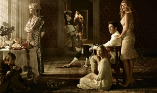
Con bastante retraso con respecto a su emisión en Estados Unidos, algo a lo que tristemente ya estamos acostumbrados, ‘American Horror Story’ llega a la televisión en abierto de la mano de Cuatro. La cadena adquirió los derechos de emisión de la ficción de la FOX y, aunque a muchos nos costaba creer que una serie como ‘American Horror Story’ ocupara el prime time de la televisión española, será estrenada muy pronto.
Así, después de que algunos privilegiados ya hayan podido disfrutar de ella, una de las series revelación de esta temporada será mostrada al público mayoritario español, por lo que, si aún no sabes de qué va ‘American Horror Story’, tras el salto descubrirás algunas de las claves de la serie con la que Cuatro espera seducir a la audiencia.
Bienvenido a la casa de los horrores
Ben y Vivian son los Harmon, un matrimonio que se muda a Los Ángeles huyendo de los errores del pasado. Lo hacen con Violet, su hija adolescente, después de comprar una casa en Los Ángeles que les deparará más de una sorpresa. En ella se han cometido varios asesinatos antes de la llegada de los Harmon, hechos que han llenado la casa de espíritus que no están dispuestos a tratar a los nuevos vecinos con amabilidad. Con este argumento tan común en el género del terror comienza ‘American Horror Story’, una ficción que va ganando en intensidad a medida que avanzan los capítulos y que, tanto para bien como para mal, no te dejará indiferente.
Porque ‘American Horror Story’ es una serie con personalidad que no duda en jugar con el espectador, para confundirlo y asustarlo como lo hacen los espíritus con aquellos que se atreven a habitar la casa donde residen sus almas. Ése es el motivo por el que los primeros capítulos de la ficción llegan a confundir al espectador, quien puede necesitar algo de tiempo para hacerse con la ficción. Y, al margen de estos sobresaltos, la ficción consigue construir una historia en la que todos los presentes, vivos y muertos, tienen importancia y en la que en muchas ocasiones los que ya han abandonado este mundo consiguen conquistar al espectador.
Si una cosa queda clara es que la ficción no ha pasado desapercibida. Estuvo nominada a los Globos de Oro como mejor serie dramática y galardonada con el Sattelite Awards a la mejor serie de género. Tanta ha sido su impacto este año, que ‘American Horror Story’ fue elegida como uno de los diez mejores estrenos de 2011 por los editores de ¡Vaya tele!, enmarcándose como una de las ficciones imprescindibles que recogíamos de la cosecha del presente curso televisivo.
‘American Horror Story’: Bajo la firma de Ryan Murphy
‘American Horror Story’ tiene el sello de Ryan Murphy, el creador de ‘Glee’. Pero no temas, aquí no encontrarás a adolescentes cantando en un insituto, ya que Murphy ha conseguido dar un cambio radical en cuanto a su anterior producción. El reparto lo encabeza Dylan McDermott (‘The Practice’) y Connie Britton (‘Friday Night Lights’) interpretando al matrimonio Harmon y en el mundo de los muertos encontrarás alguna cara conocida, como la de Zachary Quinto (‘Heroes’), que conseguirá ponerte la piel de gallina.
Pero todos ellos quedan en un segundo plano cuando Jessica Lange aparece en escena, interpretando a Constance, la nueva vecina de los Harmon que esconde más de un secreto y que consigue ser uno de los personajes que quedarán marcados en esta temporada televisiva. Tan magistral resulta el personaje de Jessica Lange que la actriz ha conseguido ser reconocida con un Globo de oro por su papel en ‘American Horror Story’, por lo que su presencia en pantalla es uno de los grandes reclamos con los que cuenta la ficción.
Adelanto el viernes 23 de marzo en los canales Mediaset
Para abrir boca, Mediaset ha decidido emitir un avance de ‘American Horror Story’ el viernes 23 de marzo a partir de las 21:30. Este adelanto se emitirá en la mayoría de los canales de Mediaset (Cuatro, LaSiete, Factoría de Ficción, Divinity y Energy), así como en Telecinco.es, Cuatro.com, Mitele.es y el canal de Telecinco en Facebook. Este evento simultáneo servirá como adelanto del próximo estreno de la serie en Cuatro, que se sumará al resto de ofertas estadounidenses que actualmente ocupan la programación de la cadena.
¿Por qué hay que verla?
‘American Horror Story’ aparece como un soplo de aire fresco dentro del catálogo de series que existen actualmente en la televisión. Por eso, el principal motivo para darle una oportunidad es querer enfrentarte a algo diferente en el panorama seriéfilo. Además de eso, encontrarás un gran casting que está a la altura de las mejores series actuales y un suspense que te atrapa desde el minuto uno. Otro de los puntos fuertes de ‘American Horror Story’ se encuentra en su ritmo y su realización y en esa capacidad que tiene para dar una explicación a toda su historia justo cuando parece que su trama pierde el sentido. En resumen, la nueva serie de Cuatro aparece como un plato suculento que muchos disfrutarán devorando sin ningún tipo de compasión.
En ¡Vaya tele! | Cinco razones para ver ‘American Horror Story’